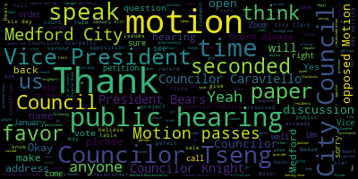
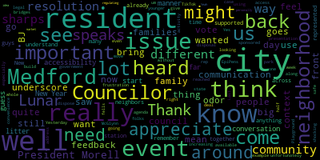
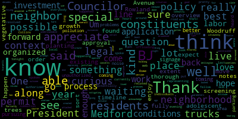
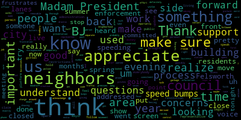
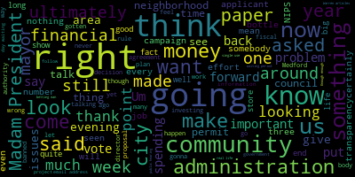

[Morell]: January 17 2023 of the Medford City Council is called to order Mr. Clerk, please call the roll.
[Hurtubise]: Vice President Bears, Councilor Caraviello, Councilor Collins, Councilor Knight.
[Morell]: Councilor Scarpelli, Councilor Tseng President present seven present zero absent please rise to salute the flag. Announcements, accolades, remembrances, reports, and records. 23-011 offered by Councilor Tseng. Be it so resolved that the City Council recognize Lunar New Year and wish our residents to celebrate a happy New Year and joyous holiday season. Councilor Tseng.
[Tseng]: Thank you, President Morell. So, Lunar New Year is in three days. I believe it's on January 20th, although with the lunar calendar, it always messes with my mind. But Lunar New Year is a time for Asian families in Medford to come back together, for families to travel back to their countries of origin to see their families there. or for their family across the country to come to Medford. It's the most important holiday in many cultures that are represented in Medford. And I just wanted to wish all our Medford family celebrating a happy Lunar New Year.
[Morell]: Councilor Caraviello.
[Caraviello]: Thank you, Madam President, and I want to thank my fellow Councilor. I think this is the year of the rabbit. Yes. And if I get my my agent right, going by choice. Am I correct in saying that? Yep. Yeah. And that means peace of rabbit means peace and prosperity. And to all our Asian people in Medford. Happy New Year.
[Morell]: Thank you, Councilor Carballo. On the motion of Councilor Tsengh, as seconded by Councilor Carballo. All those in favor? Aye. All those opposed? Motion passes. Records, the records of the meeting of January 10th, 2023 were passed to Councilor Collins. Councilor Collins, how did you find them?
[Collins]: I found them in order and I move for approval.
[Morell]: On the motion of Councilor Collins, it's seconded by Councilor Knight. All those in favor? Aye. All those opposed? Motion passes. hearings 21-301, Medford City Council Public Hearing Notice. In accordance with the requirements of Massachusetts General Law, Chapter 148, Section 13, the Medford City Council will hold a public hearing on January 17th, 2023 at 7 p.m. or as soon thereafter as it can be heard in the Howard F. Alden Memorial Auditorium at Medford City Hall, 85 George P. Hassett Drive, Medford, Massachusetts, 02155, and also remotely via Zoom for a remand hearing in the Superior Court Proceedings in the case of BJ's Wholesale Club, Inc. versus the City of, I'm sorry, versus the Medford City Council. The remand hearing will be based on the application of BJ's Wholesale Club for a flammable storage license for a proposed fueling station, including two 20,000 gallon and one 24,000 gallon underground fuel storage tanks at 278 Middlesex Avenue, Medford, Massachusetts, 02155, an industrial zoning district shown on Assessor's Map P17, Lot 5 and Map O16, Lot 1. The original application is part of the City Council Paper 21-301 from April 13th, 2021. Plans for the proposed development to be reviewed at the remand hearing are on file in the office of the Medford City Clerk and may be inspected by the public during normal business hours, Monday, Tuesday and Thursday from 8.30 a.m. to 4.30 p.m. Wednesday from 8.30 a.m. to 7.30 p.m. and Friday from 8.30 a.m. to 12.30 p.m. Any person interested or wishing to be heard should appear at the time and place of the public hearing. To attend remotely, go to the Zoom link, which will be posted on the Medford City Council section of the City of Medford website, https at medfordma.org slash city council, and in the Medford City Clerk's office not later than January 13th, 2023. Call 781-393-2425 for any accommodations, aids, TDD 713932516. The city of Medford is an EEOAA 504 employer. By order of the Medford City Council, signed Adam L. Hurtubise, City Clerk, advertised in the Medford Transcripts Summerville Journal on January 5th, 2023. Before we open this public hearing, is there any discussion from the council at this time? Vice President Bears.
[Bears]: Madam President, would you be comfortable summarizing the how we got to this point, or?
[Morell]: I can give, yeah, I can give a brief summary. I also have Attorney Austin on the line as well, who's advised us along this. I can give a summary. I've also got an expert in legal proceedings, so.
[Hurtubise]: Sure, if our legal counsel present would like to.
[Morell]: Attorney Austin, would you feel comfortable just giving us a summary of what's before us and how we got here?
[Austin]: Thank you, Madam President, and thank you, members of the council. Happy to be here this evening to advise the council on this matter. As you are all aware, this is a remand hearing, a public hearing on a remand decision. This matter relates to litigation that was filed by BJ's and I understand that representatives from BJ's are in attendance this evening. Essentially, as Madam President has stated, this involves a fuel storage license and the city council is the licensing authority. This was previously before the council several years back, There was litigation filed and now the posture of this matter is that it's back before the city council for further review and discussion with representatives from BJ's as well as representatives from any other individuals for public hearing that may want to speak on the application. I'm certainly here to answer any questions that the council may have at the outset. Essentially, this is a remand public hearing. Information and evidence will be taken from BJ's from the applicant. um, in their representatives and essentially from there, it'll be open to members of the public to comment on the hearing as well. Um, and from there, the public hearing portion of the meeting will close and the council can deliberate, um, and have any further discussion that it may choose. Thank you, madam president.
[Morell]: Thank you, madam president.
[Caraviello]: Um, so I, I, I see we have, we've got many papers here from, uh, attorneys representing, uh, both the neighbors and the, um, and BJ's. One of the things that's new that wasn't here when BJ's first came up some time ago is we weren't in a gas crisis, with the gas prices. So I've been to the BJ's and Stoneham and I see the cars queuing up there, sometimes they're 20 and 30 cars deep. I don't see a plan to deal with that. at the BJ's gas station in Medford, because obviously their prices are less than some of the other companies. So I think really that's a big change from when we first got here, and I think there should be a plan to figure out where the cars are gonna queue and how many cars, how can I get that? If you've been to Stonehenge, you can see sometimes it's 30, 40 cars and they go right up the street. So if they could explain a plan on how that's gonna work, it'd be appreciated.
[Morell]: Thank you, Councilor Caraviello, Vice-Chair Bares.
[Bears]: Thank you, Madam President. If I could just ask Attorney Austin a question, maybe to expand upon a little bit more of how we got here. When we unanimously denied the original petition in 2021, then BJ filed suit. And essentially my understanding of why this case has now been remanded to the council for further consideration is that Um, BJ's, uh, that that are reasons for denying the license were did not meet legal muster. Um, is that correct? Attorney Austin?
[Austin]: Thank you, Vice President Bears. BJ's has essentially argued through the litigation that the The denial of the prior license was not legally sound. You know, I don't want to be in a position where I'm providing legal advice to the council in open session on pending litigation. But that is the posture of the case and the arguments that are being raised by BJ's at this point. And so we are here to review further information that's been submitted by BJ's along with members of the public for the council's good faith review. I know that the council has been provided some additional materials for review tonight, and BJ's as well as members of the public will speak to those but yes, the council is correct that BJ's has challenged the legal sufficiency of the council's prior denial of the fuel storage permit. Thank you.
[Bears]: And just further on that. And, you know, feel free to answer within the bounds of being legal counsel to us while there's pending litigation but. my understanding of the consequence if the council maintains its denial of the permit and then the case plays out and it is determined that the council's justification for denying the license was not legally valid, that then the other conditions placed on the license by other city boards and commissions would no longer be in effect.
[Austin]: I wouldn't necessarily go that far. What could happen is essentially if a judge finds in favor of BJs and this matter isn't reconsidered or resolved in some way, if the matter is resolved in favor of BJs in the current posture of the litigation, then essentially BJs may hold the license. So now the council is prepared this evening to review the remand materials in good faith and essentially decide whether or not it wants to deny grant or grant with conditions. The decisions of other city departments or other city officials are separate and apart from the matter that's before the Superior Court, in my opinion, that brings us here this evening.
[Bears]: Okay, thank you, and I'll end it there.
[Morell]: Thank you. Seeing none, as per the council rules for public hearings, the process we have is to have the petition read into the record, which we have done, and next would be the petitioner provide an explanation of the matter before us for the public hearing, and then we'll open the public hearing. So if the petitioner would like to speak to the paper before us, and just name and address for the record, please.
[sVx7vl5ZjhU_SPEAKER_07]: It's Dennis McKenna. I'm with the Law Office of Raymond Bronstein in Burlington, Massachusetts. Good evening, Madam President, Mr. Vice President, members of the City Council. So as Attorney Austin correctly explained, and I agree with the answers she provided, we are back before you on BJA's fuel storage license application as a result of the remand. And as part of the presentation, my partner, Mark Vaughn, who appeared before this board in 2021, will just give a brief historical background of some of the other permits that were just mentioned, specifically the one that was issued by the City of Medford Community Development Board regarding site plan. And then representatives of VJs who are here will present a detailed presentation, which hopefully address. We have heard we've been in discussions with city representative your council during the appeal, primarily to see if there were concerns that could be addressed. We've heard those concerns up through basically today or two days ago, and we hope that, uh, we can address all of them. We believe we can. Um, and, uh, We have additional presentations that will be presented, including on the Zoom platform. So unless any of the city council members have any questions for me, I'll turn it over to my partner, Attorney McLaughlin.
[Morell]: Thank you. Seeing none, please proceed.
[SPEAKER_13]: Good evening, Madam President. He writes to share, I guess, for the screen.
[Morell]: Oh, sure. Under what name? You're good? Okay. And just name and address for the record.
[SPEAKER_13]: Yeah, sure. Mark Vaughn, with the law firm of Rima Bronstein out of Burlington, Massachusetts here tonight representing BJ's pleasure to be before all of you and happy new year. Nice to see you. So we're here in connection with the fuel storage license application. I think you're probably all familiar with the BJ's location here in Medford, but it's a site with access that is, there's an aerial that's on the screen now, but just gives you a sense of the location has access from both Middlesex Avenue and the Fells Way. It's a very large site, approximately nine acres in size, with an expansive parking field. And as such, the property is what we believe to be ideally set up and situated for the proposed use, which would be to allow for a retail gas offering to be in the outer limit of the parking field, which we'll show you in a moment. So well removed from the adjacent residential neighborhood. So this allows for customers to be able to access the gas station as part of their visit without impacting site operations in the main parking field. And we will be prepared through you, Madam President, to address Mr. Caraviello's comment just about queuing. That obviously is something that has been factored into the design. So also, I think you can see on this plan too, as I'm sure the council is aware, there is an existing national grid substation facility that does separate the location where we're proposing the retail gas offering from the residential neighborhood along Woodruff. So the gas station, just from a permitting history, it's allowed by right under the Medford zoning as the property is in an industrial zone. However, it did require what's called major project special permit review by the community development board. and that was granted, where all issues pertaining to traffic, landscaping, lighting, public safety were all looked at exhaustively. So I know as part of that hearing process, all city departments as well reviewed the application and provided comments to the CDB, and that resulted in the vote to grant the special permit. I believe that was a unanimous vote with one abstention, if I recall. As part of that review process and the review of the city departments, there were many improvements that were modified and incorporated into the final design. I know that like Austin Turner in a moment will be able to kind of briefly summarize those and walk through it. But variety of pedestrian safety, accessibility improvements, landscaping enhancements, environmental upgrades, sidewalk reconstruction and the like, which we feel will provide great benefit. I know the police department had previously commented on this application that they no traffic impact anticipated. And I know that the city's traffic engineer taught Blake as well had reviewed the application and concluded that matters pertaining to traffic had been satisfactorily addressed. So And in addition, the matter was reviewed by the Conservation Commission. Technically, there's some off locus wetlands that not on our property, but off of our property, where technically there was some jurisdictional issues. And we went through that process. And the Conservation Commission also unanimously approved the project. We incorporated some stormwater upgrades and stormwater quality improvements as well as part of that. I'm going to turn it over in a moment to Patrick Netriba with BJ's, but just very briefly, providing this is an amenity for his customers, which they do at many of their locations. And it's really intent to provide a convenience, many of whom are residents of the city of Medford, should they be on site and want to be able to get gas as well. This is actually the first club that BJ's opened in its entire portfolio and I know they have a following of of local and loyal residents. And just if these may be statements of the obvious, so I apologize if that's the case, but there wouldn't be any vehicle service as part of this. You know, there's no mechanic space or anything like that. There's actually no selling of convenience items as well. There's no convenience store element. There's a small kiosk that would be devoted uh, really to having an attendant in there that could, uh, assist any, uh, patron that might need assistance in connection with the gas. So, uh, with that, I'd like to turn it over to Patrick Natriva. I know he has been, uh, intimately involved with this for some time and, uh, as well as involved with a number of the conditions and improvements that we're proposing to make sense. Last time we were before you. So thank you.
[Hurtubise]: Thank you, Mark.
[SPEAKER_13]: Thank you.
[Hurtubise]: It's nice to see you all again. It's nice to meet some of you as well. I know there's been a change. My name is Patrick Netriba. I'm the director of real estate for BJS Wholesale Club, and we've been working on this with you for quite some time. So we appreciate this opportunity to come back and speak with you and present our new proposal and some findings that we have. Mark did a great job with his introduction. Medford's a real special club for us. It's amazing. It's 1984 when that club opened. Think about what I was doing before I wasn't up on the podium. But it's something that we hold very dear to us. It's our first club. And as part of that, we hear a lot from our members who we have a lot of in Medford. There's thousands of them. I can tell you that. Who clamor for a gas station. They say, there's one in Revere. There's one in Stoneham. Why can't we have one in Medford? just like any other business. If we don't listen to our customers, we're not going to succeed. So we've heard it over many years, and that's what brings us forth to you today. So with that, I wanted to just go through very briefly some of the things that we will commit to here as it relates to your action on fuel storage licenses, of course. And I won't drain the slides here. I'll try to be brief. on the site maintenance. I know that's been a big issue, and we've talked about that before. We will commit to an advanced maintenance program here, where we will have a day porter parking lot sweeping. The day porter will be five days a week to pick up trash. I'm using jargon. I apologize if you have to ask a question. Please stop me. We want to make sure the site is clean. So we'll have someone out there five days a week picking up trash to make sure it's clean, as well as a weekly parking lot sweeping. Biannually, in the spring and the fall, we'll do complete site cleanups. repair of any kind of issues that are out there from the plow, as well as replanting of landscaping as needed. Things sometimes don't make it, and we'll make it right, and we'll make it look right, as is shown on the plan. We're going to make sure that our trash and our dumpsters are all fully sealed. This is an issue with retail shopping centers. They don't have a lid on them. It seems like a real simple thing. We're going to make sure that we've got lidded containers and lip containers for everything that we have, as well as making sure that we empty them at least two times a week or on an as-needed basis to prevent the debris and the litter from accumulating. In addition to that, we also want to give you the assurance that we'll provide you a written summary of all of our maintenance activities and how we are conforming with the things that I'm outlining tonight. We'll provide that to you on a yearly basis, written, in terms of what we've complied with, and where we have not been able to supply with the reason being for whatever it happens to be. We'll provide that to a designation or a person on your side, whoever you designate. Landscaping. We've heard a lot about the residents on Woodruff Avenue. And I'll be the first one to say it's not easy living next to a retail development. I understand that. The people who live on Woodruff, I understand that. And we want to make it. as best as we can, given the proximity of our facility to their front door. As part of that, we are going to, or we would like to commit to an extensive landscaping plan, or a streetscaping plan, I should say, of Woodroof Avenue, as you can see on your screen, where we will replant any and all dead trees that were, or that died, I should say, as part of the city's water maintenance, or excuse me, new waterline installation. I think there were some new hydrants that were put there. and Austin will get into that in a little bit more detail, but it is a significant streetscape program for Woodroof Avenue, starting from Middlesex Avenue, all the way at the far end where the substation is, to the left-hand side of the screen for the people who are watching at home, where our building terminates. It is a good bit of landscaping, and we're happy and proud if we're able to do it. Furthermore, in terms of the communication, This is a big issue for us. We need to be able to communicate to you, as well as the residents in our neighborhood, about how we're doing. We've made mistakes in the past. I'm sure we'll make some again in the future. If we open up the communication lines, we can do better. We will commit to you here and now to provide you with the contact information, as well as a designated representative for our regional maintenance manager. This is not some low-level person. This is the person who is in charge of the maintenance for this facility and has decision-making power, who has budgetary authority to fix problems. This person can make things happen, and will make things happen, and does make things happen on this site. Pedestrians and traffic. Austin will get into this a little bit more when he comes up, but we're going to reconfigure the main entrance drive. in alignment with your Complete Streets program to make it more pedestrian-friendly. When this was built in 1984, the driveway entrance was, Austin, please all help me, it's 40-something feet wide. We've trimmed that down to, is it 30-something feet, Austin, something like that? They'll get into the details on it. We know you want a pedestrian-friendly city, and we wanna try to help you with that. In addition, we're also committed to the Complete Streets program in terms of the bike lanes and other improvements out of Middlesex Avenue. that stretch from, Austin will get into the detail of it, a certain distance south of us to the Malden line. And we'll have that information for you in a little bit. Switching back to some more on-site improvements, we're also committing to you that we will do four EV charging stations in the parking lot. These will be high-capacity 220-volt chargers that you can plug in your Prius, your Volt, your Bolt, your Tesla, if you can afford one, whatever works for you. Because we know that's the way of the future. We're not going to be driving gasoline cars forever. Lastly, I wanted to talk about another sensitive issue in terms of the trucks that are present on the site, the after hours trucks. And even today, I was very disappointed to see this, but there are three semi-trailers parked in our parking lot. And I can assure you, and I affirm to you right now that they are not our trucks. I pounded on the doors 45 minutes ago saying, what are you doing in my parking lot 45 minutes before my hearing. They are not our trucks. We have reached out. I reached out to our senior vice president of asset protection to try to get the Medford police over here because I didn't really want to knock on. I didn't really want to be knocking on some truckers door, but we are, I'm acknowledging the problem. And as part of our commitment to you here and now we will institute a towing policy with the blessing of the city. as part of the ordinances that you have to tow those people and get them out of there. I wish I could tell them tonight because it's ridiculous. It is people who are abusing the fact that we have excess parking and it's the same trucking company. You can see it on the side of their truck and it's I hope you can sense the infuriation that I have here, because it's not what I want to project to you or to the residents of this city. So with that, I'm going to turn it over to Austin, who's going to talk a little bit more about the details of our proposal. Thank you very much.
[Morell]: Thank you.
[Austin Turner]: Good evening, and for the record, Austin Turner with Bowler. If you could be so kind as to give me hosting privileges again.
[Hurtubise]: I think it dropped the Wi-Fi for a second.
[Austin Turner]: Thank you very much. So as Patrick mentioned, we have a long history here in the city, specifically recently with all the permitting efforts we went through. The plan that is on those screens went through a significant evolution as part of that process. What I thought I would do tonight for the council is kind of refresh on what the site plan's about, some of the highlights of the site plan. And then with this plan, there are very specific and fairly substantial commitments that we're making to the city to improve the neighborhood, the community, and the roadway infrastructure. I have renderings of what each of those things are intended to look like, which I think will help put a little bit more clarity than just this two-dimensional rendering. So I'll start from a high level, then we'll walk down, and I'd be happy to answer any questions that Council might have that make some sense. So from a site plan perspective, generally speaking, we're still maintaining the two access points, one on Middlesex and one in the back of the property. The one on Middlesex is being substantially upgraded. As Patrick mentioned, We're narrowing it, we're improving the geometry, and we're making some significant pedestrian enhancements, which I'll show you in some greater detail momentarily. With and through our engagements with the Community Development Board, access and traffic were a significant focal point, as you imagine. As you mentioned, queuing was something we spent extensive time talking about, and it was part of the city's independent and objective peer review. We went through a lot of discussion on that, and I'll get to that in a minute as well. So the site plan itself, as you can see, maybe the cursor on the screen moves, the new fueling facility is going to be kind of in that front right corner of the screen as you're looking at it. We did that with some intent. One, it's nearest to Middlesex. Two, it's furthest from our neighbors. And three, it's in a part of the parking lot that we don't utilize. So it made a lot of sense in that regard. The project itself is laid out so it was still dimensionally compliant with your underlying zoning. We're not here putting a project in and then asking for relief to accommodate said project. It's still dimensionally compliant. It meets all of the requirements of the underlying zoning, and frankly, it fits into the site. So one of the things that we did is this access drive. And I'll try and zoom in a little bit here. This access drive right here. Maybe I can type that up. That used to be a two-way access point, meaning you could come in, go out, you could make a left in, left out, right in, right out. It's an entrance only now. And so what we've done is we've made this much cleaner from an access point. It's much smoother, it's much more refined, and it's much simpler. Now, what happens, what we have here is the actual fueling facility. There are six dispensers and 12 fueling positions. So this is kind of my segue into the queuing discussion. We can accommodate 12 vehicles at fueling positions. We have the ability in the back of that to essentially stack another 12 vehicles behind them, another 12 vehicles behind that. Plus with the extended throat that we have, if you will, as we come in here, our total ability to stack vehicles is at or in exceedance of 40 vehicles. That is substantial. That is substantial. And this site and this layout was driven in large part by that preference because when it went through peer review and community development board, that was one of the primary focal points they told us they wanted consideration of. And the site plan was changed and revised to further increase the queuing to a point where their traffic consultant, our traffic consultant, and the community development board felt comfortable and that it was appropriate. I can keep going if there's any questions or you want to talk. Another thing that we did too is there's a fairly substantial landscape volume you can see generally centered on the screen. That was requested by the traffic peer review to really formalize traffic and make this a counter-clockwise pattern as you come into the property. and have it be very, very uniform, so you don't get vehicles that want to oppose each other. It's very defined, it's very clean, and it gives you a counterclockwise, one-way circulation pattern, and then pushes those vehicles out to this two-way intersection, which is formalized and further away from Middlesex. With this Plan 2, we've added a substantial amount of green space and landscaping. You can see it on this plan. It's over 4,000 square feet of landscaping, which may not sound like a lot on the surface, but on a property like this, it is very, very significant. So we also worked very closely with conservation. They were paramount in our review process and very thorough. One of the things that was a priority for them was stormwater. So the system that we have here and we've designed is a state-of-the-art system, it's a closed drainage network where, frankly, in existing condition, in this particular part of the site, a lot of the runoff was sheet flow, and it wasn't really controlled, it wasn't collected, it wasn't treated. With us reducing the amount of impervious, and we're adding technology into the stormwater system to treat, collect, and in some cases detain the runoff before it leaves the property, it's a pretty substantial improvement and one that the commission obviously acknowledged by way of their granting of a positive order of conditions. What you're seeing here, this graphic, and I'm gonna get to kind of the punchline here momentarily. As I've mentioned, there is substantial amount of upgrades that we've done, particularly with a focus on our neighbors, the roadway network, and things that the community, both through the discussion we've had in front of this council, but also through our historical conversations with Community Development Conservation Commission that were made quite apparent, that were very, very important to the community. One of those things that you can kind of see in this plan, and I'll show you the rendering here momentarily, we are substantially upgrading the landscaping on Woodruff Avenue. Historically, there were some trees there, as you'll see here, and I'll bring this up right now, Those trees, the bottom image is the existing condition. It's a pretty rugged looking photo, to be perfectly candid. The trees there got heavily impacted by some of the utility work, I assume their roots got cut. They obviously didn't make it through there. The top image is what we're proposing. And that is a dense, vegetated screen on the interior, and by interior, I mean on the woodruff side of the fence, but also some of that landscaping is occurring on the backside of the fence. And the fence is going to be upgraded to where that fence has seen better days. The slatting in there is going to be replaced with new slatting. It's going to be clean. It's going to be far more improved. And frankly, you might not even see the fence with all the landscaping that we're doing. So these trees here are evergreen plantings, something of an arborvitae type, or what's frequently referred to as a green giant. very dense, they're coniferous, they're not gonna lose leaves over the wintertime, so that screening will be year-round. Interdispersed amongst that screen wall, we're going to have deciduous trees too, something with a canopy, visual interest to kind of break up the solid wall and provide a little bit more height and complement what we're proposing. This landscaping, for context, runs from the point at which Bradbury intersects Woodruff all the way to the back of the building. So from this point here, you can see the cursor on the screen, all the way to the right of the screen, that is going to be reestablished, replanted, and as Patrick pointed out, streetscaped. That's something that was told to us on a number of occasions in a number of public venues was of critical importance. And we listened, and that is a pretty significant upgrade. If you spin and turn around, this is essentially the same positioning. Looking back towards Middlesex, back towards where the fueling facility is going to be, we're doing the same thing. So I only spun the camera here just to give you context looking up and down Woodruff. And this screening here is going to extend All the way down to Bradbury, there's a fairly established vegetation wall from Bradbury as you approach the substation that we're not going to touch. There's no point in us kind of getting in there and tangling with that.
[Morell]: If I could just ask a question about that. Yeah, certainly. Somewhere in the plans, it said something about tree removal for the EV stations. Is that, where would those be coming from?
[Austin Turner]: So there are. I don't believe we're going to have any tree removal for EVs, so I'll get there. I don't think I'm making it up.
[Morell]: I believe I saw it somewhere.
[Austin Turner]: So the new, we're proposing four electric vehicle spaces right here. We put them in that part of the parking lot because the infrastructure is there and it's not going to require clearing. So we had contemplated to your question, we had contemplated earlier a different location for the EV space that may have required some tree removal. This space does not, and was part of the reason we found it more favorable.
[Hurtubise]: Okay, thank you. You're welcome.
[Austin Turner]: So, this is the substation I'm zooming in on here, you can see it. We didn't do a rendering here, but what we're also doing is the vegetation that you saw in those proposed renderings, we are going to supplement the vegetation that's there today. Let's see if I can get Magic Google Man to show us what that all looks like. So this is what that looks like today. And it's not lovely. Those trees there are established. They seem to be in pretty good shape. They do actually get green in the spring and summer. But there's a pretty high canopy there. So the intent for us is to blend that in. and in locations where that vegetation just simply doesn't exist, like this corner down here, or if it does, it's not wonderful. Extend what I showed you on those renderings down to this location. So the intent is to make that spot look like this spot to the extent that the overhead wires will accommodate those trees. But the idea is that there's essentially a solid vegetated wall from the rear of the BJ building to the substation that looks like that. As you can see from the photo, it does a pretty good job of masking the parking lot and to a large extent, the building. And we think that's a pretty significant upgrade over what has historically been there. The next part of this conversation was the improvements that we were making and we've committed to make to Middlesex Avenue. So what we heard is that Middlesex Avenue is very, very important. Not only was it an important road, it wanted to be substantially more pedestrian and bike friendly. What we've done is worked with the Community Development Board with MassDOT to develop a plan that improves nearly a quarter mile of Middlesex Avenue. And it's consistent with the complete streets program that is in the city's master plan. and was something that was very significant in its importance as part of our discussions with the Community Development Board. What that looks like, something to that effect. So what we've done here is you're standing looking north on Middlesex. This driveway on the immediate left of the image is the site driveway. That driveway is substantially narrower. As Patrick mentioned, the geometry's been improved. The sidewalk is going to be ADA accessible. And we're reconstructing it along the project frontage, improving the striping, and bringing that into compliance with the current accessibility standards. On top of that, this striping here is for a defined and dedicated bike lane on both sides of the road. And that extends nearly a quarter mile into this image which is approximately 1,400 feet, is the total length of the improvements we're making to Middlesex Avenue. We've also superimposed the landscaping improvements, some of the site features here, to the extent that they would show on this image. What we didn't have context for in our prior discussions with this council was what this actually looked like. And we realized after the fact that that was pretty impactful. In response to that, not only have we prepared these to give you a much better visual depiction of what we expect this to look like, but also have upgraded it significantly since our last discussions to really listen to the feedback you provided, the public had provided, and show that we're committed to being a good neighbor here. With respect to some of the other improvements that we're making, too, I mentioned electric vehicle. I don't want to dismiss that. We are putting EV charging stations in. We've heard that on multiple occasions, so Patrick and his team have committed to that and have an agreement in place to install those.
[Morell]: I just have a question on that. Would you need a BJ's membership to use those chargers? I don't believe so.
[Hurtubise]: We're still working out the details for that, to be perfectly honest with you, Madam Chair. We'd like to have that be a member benefit. People pay for a membership when they come to BJ's, and it's part of the benefits of having a membership. But to be candid with you, we haven't quite worked that out on our side yet. So it's still up for discussion and consideration.
[Austin Turner]: And then kind of in conjunction with what I'd mentioned on the Middlesex Ave, Improvements what we've done too. We worked very closely with conservation and community development We extended Pedestrian accommodations all the way interior to the property. So there historically has been no sidewalk connection here and we're bringing that all the way in from Right here magical hand is just a question from councilor Scarpelli.
[Scarpelli]: Before you move the screen and change the screen, I know that some of the neighbors, one of the questions they had were really when the business was closed, maybe there were racing cars. Are we putting in speed bumps as race walks on the premises or in the lanes now?
[Austin Turner]: We haven't put in speed bumps or any of those kind of restrictors, if you will. But I can tell you, and Patrick mentioned it, and you can speak to it too. We're very aware of those considerations. And Patrick mentioned with the trucks, if he can talk to what operations is doing to kind of combat that.
[Hurtubise]: Sure, Councilor Scrivley, thanks for bringing that up because it is a concern. And I've heard that in the past as well. It's like those trucks that are parked there right now, I wish I could control these people from doing silly things. But your suggestion of speed bumps is a good one. We've looked at that in the past. Unfortunately, we have to plow the area and then a speed bump gets ripped up. So I'm not trying to kind of push back on it. I'm just trying to be practical. But a better solution that we've identified in the past at other locations is we can track the license plates of these people who are illicitly using our parking field for this silly drag racing and then capture them on camera. from a camera that's mounted on a light pole, and then submit that to your police department for enforcement action. Because the last thing we want is screeching tires in the middle of the night, and we want them out of there just as much as you do. So we are happy to commit to a program like that, where we identify and submit that information to your police department for enforcement action.
[Scarpelli]: We appreciate that. But I know that talking to some of the residents, probably the worst time is during the spring and summer. where I know they have the removable speed bumps. Could that be possibly looked into for spring and summer months that we could put those down? I know that in the city, we've had areas with the temporary raised bumps to try to control the speeding. I think that, and I know we're not looking in this picture, it's not showing much of the back of the building on the Felsway side. And it's good to see all the work being done at the front, but on the back, I know that in the past, I know when I used to work there, they used to have a gate that at the end of the evening, we used to close access to the back of the building when businesses closed. On the Felsworth side? On the Felsworth side, years ago.
[Hurtubise]: Yeah, we take delivery trucks on that side. We do. To try to prevent them being on the residential side. I'd like to keep that open, but I will absolutely acknowledge your suggestion of the removable speed bumps, or whatever you want to call them. And I'm happy to commit to that as well.
[Bears]: Yes, I appreciate that. Thank you.
[Hurtubise]: Yes.
[Morell]: Vice Mayor Bears. Just a quick follow up on this one.
[Bears]: It does look like at the southeast corner of the building, you're adding what looks to me to be maybe some curving to curve the street a little bit, to curve kind of that entryway a little bit more. And then is there additional curbing being added in the parking area as well to kind of delineate the roadways more than they currently are delineated now, or does that indicate existing curbing?
[Austin Turner]: So there's a couple of things. Yes, good question. It depicts existing curbing to the extent that it's there.
[Bears]: Okay.
[Austin Turner]: and new curbing where we're proposing it. We are proposing a fair amount of new curbing in here to formalize the traffic pattern, to define them, which I think where you're going with this is that that's a physical barrier to people just ripping across the parking lot. And it really defines traffic patterns. So we are doing both. So there's existing curbing in certain places, particularly along the main channel here. And then this here, which this has kind of been the biggest speedway, if you will, That's going to be substantially changed. There's a lot of curbing going in. There's a big bumper island that's in place. And as Patrick mentioned, we'll commit to those removable temporary barriers that can be put in seasonally to really make those an impediment. Great. And then your question about the additional curbing. We did try to formalize that approach into the parking lot just a little bit more. We wanted people turning in and not running parallel to the extent that we could. So it wasn't a major geometric improvement, but we think it's an improvement nonetheless. We've kind of generalized it a bit better.
[Bears]: Yeah, I notice it's a tight corner. But right now, you could probably swing a pretty straight shot all the way from the back of the building all the way to the substation. It looks like there's going to be some stuff to mitigate that.
[Austin Turner]: We're trying to discourage that.
[Bears]: Yeah, thanks.
[Morell]: Any other questions at this time? Please continue.
[Austin Turner]: So I think I've reached a point where I'm happy to kind of get into any additional questions, details that the council may wish to discuss.
[Morell]: Councilor Collins.
[Collins]: Thank you, President Rowland. Thank you for the thorough overview. On the vegetative screening along Woodruff Avenue, I'm just curious, what's the timeline on the sort of what, if that were to go in, when can residents expect to be able to fully enjoy that? I don't know to what extent it's planting of existing adolescent trees or waiting for a lot of growth to happen?
[Austin Turner]: Very good question. So what we've selected here, the green giant, for example, they can grow up to 350 a year after the first year. We're showing these, I wouldn't say at full maturity, but a couple of years into their growth pattern, those are approximately 6 to 8 feet tall. When you buy them, they might be in the 5 to 6 foot range. You might see a year or two that you'd see those green giants get to the height we're showing in here. what we'd like to do in a perfect world, and I'm being a bit presumptuous, but to kind of get these going in the spring, as soon as we're able to plant, we'd get this going almost immediately.
[Hurtubise]: Yeah, and then furthering that, Councilor Collins, we will commit to installing that landscaping as the first phase of this project before we put a shovel in the ground or anything related to the other work that's proposed, we shall do this landscaping first. Okay.
[Austin Turner]: Thank you. People I, I'm still the host and there's a couple of folks that want to get in. Should I admit or with great power. Thank you. As Patrick mentioned about the trucks parking isn't just your parking lot.
[Caraviello]: They park at the Felsbury Plaza. It's an issue throughout the city. The city has towed a bunch of some other properties already. So that's an issue, not your fault, but it's happening all over the city. We seek to resolve it, thank you. Being a customer and buying gas from you, what happens is people are confused when they're in that queue there. And I think if, and as I say, I've seen it at your other stations, if you can get the guy to come out of that little boot there and kind of guide the cars into it, because sometimes, you know, the gas tanks are left, right, and people stand there and there's all these open pumps and no one guides them to the openings. So in critical peak times when the cars are queuing, if the gentleman or the person who was in that little boot there comes out there and kind of goes out there and guides them into the spots, I think that would be a help also. Yeah. Because I've seen people, they get frustrated because they're looking at the scene, six pumps are open and there's cars waiting. So I think that would be a... when the line does get a little bit, if the president come out and just kind of get him into the spot, push him up a little bit. That would help alleviate some of the traffic that's up.
[Hurtubise]: You're absolutely right. There's a pinch point and we've dealt with that. And unfortunately, I wish I could control what the public does, but you're absolutely right. And it's a good suggestion. And we'll be happy to look into that. Thank you. Yes.
[Morell]: Councilor Collins.
[Collins]: Thank you. One more question while you're up here. I appreciate the notes about pursuing better signage and a towing policy for unauthorized trucks in the parking area. I think that we also heard from residents about some problems, noise pollution coming from potentially authorized trucks with a lot of offloading happening into the evening hours. I was curious if, is there currently a policy around that? Is that something that could be resolved as well?
[Hurtubise]: probably referring to the backup sounds that the trucks have made. I'll take a leap and just make that assumption. Unfortunately, every time a truck backs up in this country, that's the sound it makes, and we're not able to mute that. I wish I could, but we We can't. We have to comply with the law there. In terms of our loading facility, we have a no idle policy. There's what's called an APU, which is an alternate power source. It powers both the cab so the battery doesn't drain, as well as the refrigeration unit if there is a refrigerated trailer. So unlike those people who are in our parking lot right now idling their truck and being a disturbance, we do not do that. And we make it a policy not to do that. because it's a waste of gas, it's a waste of resources, and it does create a sound issue, and that's not what we do, and that's not our policy. So I hope that answers your question.
[Collins]: Thank you.
[Hurtubise]: Yeah.
[Morell]: Councilor Tsengh. Sorry. Councilor Tsengh, I heard you. We'll go back to you. Go back to you. I mean, mine's quick.
[Tseng]: It's on the, in a similar vein to Councilor Collins' question. We also heard from residents about odor, odor concerns with the new gas station coming in. Is there anything you guys can do to minimize that effect of the odor of gasoline? And is there anything that you guys are, that's already in this plan that speaks to that?
[Hurtubise]: Sure, yeah. You know, and I've got a control image in here, Jason. You can come up and speak to it. the technical aspects of that, but the station is fully self-contained. There are no odors that emanate. many from it. Of course, if there's a small spill, everyone has a drip along the ground, you might smell something locally. But Jason can speak to the odor potential for the station as it relates to fill up or fueling. So why don't you give a quick summary on that, Jason.
[SPEAKER_14]: Hi, my name is Jason Carr. I'm with Stantec Consulting. We're fuel system engineers. We're BJs. So a quick overview of the gas station vapor controls. The underground storage tanks have what is called stage one vapor recovery. So during any fuel transfers, all the fuel that goes into the tank is recovered inside the tank inside of a closed system. and it's recovered into the bulk fuel carrier where it's transported off site. So there is no emissions at all during the fuel transfer. And likewise, during the fuel delivery into their fuel transfer into your personal vehicle, that also has a recovery built in where those any emissions during the fuel transfer is actually recovered inside the vehicle and also inside the dispenser and goes back into the underground storage So it's a completely closed system. And that is a Massachusetts DEP and EPA requirement. And it does provide a very, there's no direct emissions coming out of any of the vent stacks. Those are just, those are there as relief in the event of an unusual operating condition. But that, you know, that's a closed system.
[Morell]: Thank you. I hope that answers your question. Vice President Bears.
[Bears]: Thank you, Madam President. Jumping back to the late night sound and cleaning issues. So I think one of the issues that I, you know, we've had a lot of email chains around the property over time because of stuff happening late at night. Sometimes it may be trucks that aren't your guys. Some days it might be the backup noise from delivery from your trucks. I think recently it was actually like vacuum trucks of some kind sweeping. It was like street sweepers and they were just there late at night. And it ended up being, and I'm not sure you're aware of it, or I'm not sure exactly how it was dispensed of, but it was a violation of the city noise ordinance. And I believe the police were notified, code enforcement was notified, and like a ticket was issued, or at least a warning was issued. And I believe that was probably authorized activity.
[Hurtubise]: you know, or I don't know if you've cleaned a lot regularly or we do, and that is not our policy, because it just doesn't make sense. So yeah, sorry about that. Yeah, that is not how we roll. If you pardon the expression, but we'll be happy to commit to no overnight street sweeping. That's awful. Sorry.
[Bears]: Yeah, no. And so and the reason I bring it up, and I appreciate that, that commitment, I think, you know, Some of this is going to be about coming up with a framework of a system where we can be in dialogue. And when things come up, we can engage more directly.
[Hurtubise]: That's what I mentioned in my opener there about establishing those communication lines with the regional maintenance manager. It's not a low level person. It's someone who works at the home office with me who lives in this area, who knows this club very well. So you're absolutely right. And we're happy to engage in that dialogue to course correct when we have to.
[Bears]: Yeah. And that's, you know, I want to acknowledge that that's a, that's a piece of kind of what we're looking at as a sort of a conditions for, for this license. And I appreciate that. And I know we're going to, you know, iterate and work through that over time, um, where that, you know, there's going to be things that fall through the cracks and we're going to need to make sure that, uh, you know, accountability is there when that happens. Um, but I just wanted to flag that because, you know, for, for, uh, the advanced maintenance program of the weekly sweeping and the day Porter service, you said it's five days a week of the day Porter service. And, and the spring and fall landscaping vacuuming emptying of dumpsters and stuff, you know, that's all going to happen. I just want to make sure that's happening before 10pm at night, you know, is that Yeah, absolutely.
[Hurtubise]: And if I wasn't clear on that in my opener, I'm happy to to affirm that to you now that we will we will not do any overnight street sweeping that I'm sorry somebody did that. That's just stupid.
[Bears]: Yeah. And, you know, again, it was, you know, it hasn't happened since the resident reported it and it was addressed. So I don't know if the on-site person, something happened and I understand there's contracts. So again, I'm not trying to place blame, just say what happened and mention that that's, you know, I think the goal of whatever we agree to and come up with should be that if there are issues, they're addressed promptly and don't happen again. And I think it seems like there's a commitment there. On dumpsters and trash receptacles and, you know, maintenance of landscaping. I just want to flag for you guys that probably makes sense for your maintenance team to just review the city did pass a road road and control ordinance recently I haven't heard anything specific about the site around that so I'm not making any allegations of such but it's just a new ordinance that we passed recently that I think would make sense for the folks involved and on the ground to be aware of so that if there are issues they're just there in compliance in advance. On the landscaping maintenance, I know that you did commit to landscaping the new on-site pieces. Now for the Woodrofab and for the Woodrofab improvements that are technically not on the property of BJ's, are those going to be maintained over time by BJ's as well?
[Hurtubise]: So what we'll do there is we'll provide a one year warranty, either one growing season or one year, however that works out depends on when you plant them to make sure they have taken. and that'll be as part of the contract that we get, but then they'll be in the public right away. So that'd be the responsibility of the city, but we're happy to work with this Community Development Board and their professionals to pick drought tolerant plants that make sense for our setting and our climate region so that we can ensure their survival. We don't want to plant things that are just gonna die in a couple of years. That doesn't make any sense.
[Bears]: Right, and on that front, you know, I think the, And from the renderings it looks like that's going to provide a real natural vegetative barrier that's going to help with sound at site issues, which I think is great. The flip side of that is that looks like a lot of stuff to maintain to me and and you know and I'm not an expert in landscaping or maintenance of landscaping but You noted in the presentation that there was utility work done and trees ended up dying. And you've kind of seen that the city has not had the resources to go back and fix that issue on our own. We're very tight for money and it's a constant issue on all fronts. So I just want to, I appreciate the one year warranty and I appreciate the improvements. I just don't want us to be back here in five years and half of it's dead and the city saying we can't really maintain this or we don't have the funds too. So I just want to kind of play that out a little bit.
[Austin Turner]: It's a good point. I think to kind of further Patrick's discussion, what we've selected here are plants that are intended to be low maintenance. But as Patrick pointed out in his opening remarks, and he reiterated just a moment ago, the intent here is that you have a live human being who you can reach out to that Patrick knows that we can connect with. So if the city sees something with the vegetation that say, hey, this thing's becoming unruly, say, right? And we could use some help here to take care of that immediately. And Patrick has, and he does currently have and will continue to have a landscaping maintenance contract for the property. And if we're aware of something that needs attention, we can address that and work with you to do it.
[Bears]: But that would even be for the landscaping that's on the public right away?
[Austin Turner]: Yeah, I think so, because it's going to be part of that whole offer. It's contiguous. The landscaping is not going to really know that it's on one side of the boundary or another. So we can work with you to identify something. We're happy to help you figure that out. It's not the intent. It's not to set it and forget it. It's your problem now. The intent is that this is going to be a collaboration.
[Bears]: Right. And I mean, I guess could we, you know, would you be comfortable if we kind of formalize that in more specific written language as a condition that the that there'd be the potential for the landscaping, on-site landscaping to address issues in the public right away on Woodruff Ave or, you know.
[Hurtubise]: I think what you're saying, Councilor, and I'll take it even one step further, is that you want, and I'll tell you what, I want that buffer to be maintained.
[Bears]: Yeah.
[Hurtubise]: And I understand that. So how about we do this? We shall commit to the, not the maintenance of the buffer, but the preservation of the screening. So if there's a dead plant, we shall replace it. But we're not going to mow the grass over there or do the normal maintenance things that you have. Exactly, yeah. You guys have your program, but in year five, if there's a arborvitae that dies, we will replace that.
[Bears]: Yes, I think that's exactly right.
[Hurtubise]: And maintain that screen for our neighbors on Woodruff Ave, because it's the right thing to do.
[Bears]: Yep. And that sounds right. And really where I'm getting at here is I think the goal here, and I think kind of how we all got to this point, is a lack of trust. And I know you know, and I think you've done, basically, however we can structure an agreement to build trust, rebuild it, and then maintain it in the long run, so that the city government, you guys on your end, and the residents all have certainty and clarity about how that arrangement's gonna work, is, I think, really important. So I appreciate that, and I think that that would go a long way on that front.
[Hurtubise]: We seek the same thing.
[Bears]: Just on the last couple of things, I have a few more things, and I apologize for monopolizing time. Just on the annual report, could we just put in a specific date of it will be annually by May 31st? Is that a comfortable, acceptable to you all?
[Hurtubise]: How about we do it? But how about January 31st? Because that's been our fiscal year. Sure. Great. Just to keep it consistent with our reporting.
[Bears]: That sounds great to me. I just think any annualized date will help. Then we know when it's coming, and we're not asking around for it, and you guys aren't wondering if you've met the deadline. Last couple things on the BJ's representative, I appreciate that as well. Something, if you would be comfortable with it, would you be amenable to us, the city of Medford making that person's contact information in some form available on our city website.
[Hurtubise]: Making that as part of the public sphere is. I'd like you to have access to it. I'd like you to distribute it to anyone who has concerns with putting the gentleman's phone number on the website.
[Bears]: Well, yeah, not necessarily his personal information.
[Hurtubise]: Well, no, this is his personal cell phone that we are willing to provide you because we want you to have that access to that information. So why don't we leave it as a condition that we will provide you that information. And if anybody in the public would like to get that information that you can broker that easily and quickly.
[Bears]: Go ahead.
[Knight]: Is there an email address, maybe a general email address, a customer service email address, or something like that?
[Hurtubise]: We shy away from those because it gets flooded with spam, unfortunately. And we've set those up in the past. And then all of a sudden, it's full of stuff from Russia. So I would like to say yes and tell you that it's going to work out great. But over several months, the bots, they get you. And all of a sudden, it's
[Knight]: You sound like that Nigerian Prince I get the emails from today.
[Hurtubise]: We will ensure that this representatives needs to regional maintenance managers contact information is provided updated, so that direct lines of communication can be established between the city or the public and this individual so that issues can be resolved. I think that's what you're driving at.
[Bears]: Yeah, I did not realize it was going to be a personal cell phone number. I would not ask that to be placed on the city website. But, you know, something, and kind of in addition to a slash around this, I don't know how your website structure works. I don't even know if you are an expert on that. But is there a page for this specific store somewhere on the BJ's website? Absolutely. Could you put something on there pointing to the city of Medford, you know, if you have question or concern, you can reach the City of Medford. The City of Medford can help you reach us to address it or something like that, you know. I don't know how many people are going to your website to complain about you, quite frankly, but, you know, I'm just trying to think of ways that we can make it clear to people that there is an option here that if you have a question or concern that you want addressed, you know, and if you come to the city website, it tells you who here can help you address that. If it goes to your website, you could say the city, we have an arrangement with the city or
[Hurtubise]: We could look into that we, we've never done that in the past. Yeah, I prefer to be through through your, not your body but through through the city's organization, understand you don't mind.
[Bears]: Yeah.
[Hurtubise]: So I think that's where I land on that.
[Bears]: Okay, that's fine. Yeah, I was just kind of exploring that one out a little bit more but, again, I think the someone in the city having a personal phone number being able to have that direct contact is very important to us. Last couple things, or last final thing, actually, is on the improvements on Middlesex Ave. Are those, and again, you're not MassDOT and you're not the city of Medford in terms of opening roads, so I appreciate the... commitment to making some significant improvements to the roadscape on Middlesex Ave. Just my question, I couldn't quite tell from the plans, are those going to dead end at the Malden line and then at whatever that barrier is to the south? Or is it connecting to an existing bike lane or other improvement?
[Hurtubise]: Yeah, we've got our traffic engineer. from the VA. Go ahead, Sean.
[Kelly]: Thank you. Good evening, Madam President, members of the Council. It would dead end, ultimately. At First Street, we'd be transitioning to Sherwood Lanes, and that would carry to Fifth, and then the bike lanes would end there. So in total, it's about 1,400 feet of exclusive bike lanes, and then to the south, another 1,000 feet of Sherwood as the Sherwood Lane, and then it goes back to existing condition. OK.
[Morell]: Just your name for the record, please.
[Kelly]: Sean Kelly with the NASA Associates out of Andover, Massachusetts.
[Morell]: Thank you.
[Bears]: Great. Yeah, that's just helpful for me to know. It's obviously a jurisdictionally difficult area, so I understand why some of that is the way it is. Thank you. And I'm done. Thank you, Madam President.
[Morell]: Councilor Knight.
[Knight]: Madam President, thank you very much. Thank you to the team from BJS for being here this evening. This has been quite a long dance for all of us, I think. And at the end of the day, looking at what's before us here and the proposals that have been made and the concessions that have been made, the mitigation efforts that have been made, can you just give me the ballpark cost as to how much all these extras for mitigation are going to cost PJs at this point?
[Hurtubise]: You're talking about the work that's outside of our scope of building a gas station?
[Bears]: Yeah.
[Hurtubise]: So, I mean, it's several hundred thousand dollars. I'd venture a guess that we're in for over probably a half a million dollars at this rate, probably even a little bit more than that.
[Knight]: I just think it's important to show that you're making an investment. When you think about DJs, this is your first store, your landmark store. We talked about the history of the issues that we've had there, but ultimately you're a large employer here in this community as well. You know, I think you bring a lot of good to the community. And, you know, these quality of life issues are going to come with any big business that's located in an area that abuts a residential neighborhood. But it's important, I think, to point out the fact that you put money where your mouth is when you're investing in the neighborhood and investing in the community through the proposal that you made for us this evening. One thing I do have concern about would be an application for extended hours for operation of the gas station. Um, that's something that I don't think the neighbors would particularly care for. Um, that's something that I think that, you know, we'd have to address, you know, going going forward. If you came forward with that application, I don't want to end up in a situation that we're in right now.
[Hurtubise]: Again, we don't we don't have any mark.
[SPEAKER_13]: I understand that. I believe the City Council has a provision in the ordinance that anything beyond 7 a.m. to 11 p.m.
[Knight]: Yeah, so we're not looking to have anything right because I just don't want to see us doing this again where you know the neighbors don't want it. We get to this long Toronto Priya fight about you know what's going to happen for a couple hours.
[Hurtubise]: Stay with that. You're late on this.
[Knight]: Excellent. Thank you very much. I appreciate you guys taking the time.
[Scarpelli]: Thank you, Madam President. Again, thank you for presentation. I think you have been very thorough and answer our questions. But most importantly, I think you realize most of these questions derived from the most important people. Those are our butters and residents live around the area. Um, we appreciate that you acknowledge that 1986 and being the, you know, the first B. J. That opens. But, um, I'm sure you've heard from the neighbors that it didn't show it. And I think that's what they were concerned with. And, uh, this is good faith and movement. I think that, um, it's important that they have a voice and they have someone they can talk to. Uh, even if it is through the city in the code enforcement officer, let's say that has a contact number. I think that's something that I wanted to make sure we had, and I appreciate that's in there. And going the extra mile and giving that person's personal information I think shows the commitment that we haven't seen from BJ's for a long time with our neighbors. So those pitches are pretty drastic. you know, with the fencing and the garbage that went through onto Bradbury or Woodruff. And I think that those are the concerns where you've addressed. So I think the trucks that what frustrates you frustrates all of us. And I think that's something that we as a council have to have a separate meeting with the traffic enforcement, the chief of police and make sure we do we do our job to make sure that that stops. So again, I appreciate it. I appreciate that. You made not just some half remarks saying that you'll try, but you're committed to a lot of these, even with the speed bumps, something that being creative and looking at seven months out of the year, that we can definitely stop that process of speeding down those lanes. I think that is exactly what I was looking for tonight. So I appreciate the effort. Thank you. You're welcome.
[Morell]: Thank you, Councilor Carbelli. Any further discussion from the Council at this time? Understanding that we still do have to open the public hearing. All right, at this point, we will open the public hearing. Anyone who would like to speak in favor of the paper before us, please come to the podium and speak at this time. Yeah, would anyone from BJ's, assuming you're in favor of the paper you just presented on, like to just speak in favor of the paper at this time? Just the official process of the public hearing. Someone just has to say that they're in favor. Sure.
[Austin Turner]: Yeah, Austin Turner with Kohler, very much in favor.
[Morell]: Thank you. Anyone else who would like to speak in favor of the paper at this time? I see Tony on Zoom, and this is to speak in favor of the petition at this time. Tony, I will unmute you if you could to share your name and address for the record, please.
[Puccio]: Hi, Tony Puccio, Taylor Street, Medford Mass. Thank you for allowing me to speak. I just wanted to mention real quick that I worked there back in 1986, and I've been a member for 30 years. I'm happy to see businesses thriving in Medford. I would hope that they get the support of the city council. BJ's has been a great supporter of many events in this community. They're always very supportive when I've approached them to ask for sponsorships or money for many of the sports leagues and things that I've worked for, coached for, and also other events that I've tried to raise money for. I'm happy to see them grow and I hope they, like I said, they get the support. I do have a quick question. I don't know if I'm allowed or not. I was just wondering if this was a self-serve station, which I believe it is, if they will have an attendant present for the disabled and the elderly. If that was an answerable question, that would be great. And again, I just hope that they get support this time because they have supported us. And I'm glad to see a commercial base growing in Medford to help alleviate the tax burden that we all seem to be complaining about all the time. So thank you very much.
[SPEAKER_00]: Thank you for that question.
[Hurtubise]: Answering the gentleman's question, yes, it is a self-serve facility and state law compels us. And of course we would comply with any ADA laws that are out there for someone who needed help. That's standard practice for us. Thank you.
[Morell]: Thank you. Is there anyone else who would like to speak in favor of this paper at this time? Seeing none, this portion of the public hearing is closed. Is there anyone who would like to speak in opposition of this paper at this time? Please come to the podium or raise your hand on Zoom. please come up to the podium. Name and address for the record, please.
[Stephen Broadly]: My name is Stephen Brodley from the law firm Heron Fox Schiff. And I submitted to each of the members a brief package, which merely has three elements. It has the affidavit sort of of many members of the community who spoke after the last vote and were happy with that last vote. I also submitted a copy of the letter that was provided to the city council by Jessica Wall before its prior hearing, which has a lot of the good details about the issues that have to be dealt with. And I submitted some pictures that were taken, mostly along Woodruff, showing the condition of the fence and the ground in that area as of last month. The city council here is sort of the last resort for the community. They can go to the Conservation Commission and the other folks and satisfy the statutory and regulatory requirements. And they can come back here and provide you with more pictures and more details. But I'd like you really to think about what's changed since they were here in April, two years ago. And I think the answer is not much. I heard one Councilor say, the issue here is rebuilding trust. And I would say to you, that in the 20 months since they were here the last time, they've hired some folks to make more pictures, they've made a longer list of promises, but it's like the song, promises, promises. They have not gone, to my knowledge, and done anything that you could go out to the site and C was evidence, physical evidence of their good faith. It's all down the road. It's all if you give us what we want. Not that we have a duty that already exists to be a good neighbor to this community, but if you give us something else, then we'll do something else. They should be showing what it is that they can do and what they're able to do so that the people in the community can say, well, maybe there is some trust we can give these folks. So far, it's just talk. It's just talk, and it has details, and you got a number, half a million dollars, maybe. Maybe. Maybe. Who knows? You don't know. They didn't get pushed to go do anything between the last time they were here and now. They went to the court and said, no, there's something wrong. They were irregular. They did this wrong. They did that wrong. They spoke in favor. They didn't speak in favor. But what they didn't do was to go out and show good faith on the ground. That's what you should be looking for. And that's what I submit to you that you're not going to find. And I don't need to go through all of the details that were analyzed and discussed in the earlier letter by Jessica Wall and that you all have heard before. All the details, the smoke. the smell, the this, the broken fence. They're all there and they're still there. The history is still there. If this was a flagship store, 38 and a half years later, doesn't look like a flagship store. It doesn't. And they can say, we really honor this place. We have a special plaque in our home office about this store. But when you go out and look at this store, you're not seeing the flagship. You're just not. And I think that you have to decide now. You have to decide what happened in the last 20 months to make at least five people in this room say, you know what? We made the right decision. Or we didn't make the right decision. If there's something there that you can seize on, that you think shows that good faith and shows something different, okay. But I would suggest that I'm sitting in the back and I haven't heard anything but more explanations, more details, and a few more pictures. And I just don't think that does it. Obviously, it's your decision, but you are the last resort for members of your community. I don't live in the community, and there may be one or two folks here who do, who would like to speak as well. I don't want to take their time. My material has been submitted to you in writing, and I've tried to highlight it in these few minutes, just why I think that this is something that you can't just say, well, we kind of got all buddy-buddy in this conversation here. You're going to promise this, you promise this, make a nice list of the promises. And I'll give you the name of somebody that you can call when there's a problem. Why didn't that happen before? Why wasn't that out there? So they could come in and say, here's what we've shown you now. We've accomplished something. You should believe us that we'll do more. They should go first with the action and then look to see if the city wants to give them something else. Instead, it's no, no, no, we'll wait. And you heard in the last hearing, well, five of you heard in the last hearing, somebody was asked and said, well, if you don't get this storage permit, Are you gonna do those things with the trees and the fence? Well, that's part of the plan. That's part of the plan if we get what we want. It's not something we feel we have a duty to do unless you give us something first. And I would suggest to you, they haven't done their job. Thank you.
[Morell]: Thank you. Is there anyone else who would like to speak in opposition? Please come up to the podium. just name and address for the record, please.
[SPEAKER_18]: Matt Woods, Fabry Avenue, with an interest on Woodruff Avenue. I actually have a family home on Woodruff Avenue as well, and I have since 1986. I grew up in Wellington on 4th Street, been going down to BJ's before it was BJ's. It was a brickyard, so I'm familiar with it from its inception until today. I just noticed today, so I'm gonna hop around a little bit. I think that the city had an agreement with BJ's when they first came in, and you all might have this in the paperwork somewhere locked away, but they have two gates on each side of BJ's, and they have since the beginning. And I believe the city had an agreement with BJ's that those gates would each be locked in the evening time, which would do away with the racing cars, which would do away with the trucks idling, which would do away with the street cleaning in the middle of the night, which would do away from the 2 a.m., 3 a.m. snow removal that they do. on a regular basis at the wintertime. But those gates are locked, and the reason why they unlocked them, my understanding is, is that the semi-trailers would start to back up, start to honk the horn, start to waiting on the streets, so they couldn't get into the BJs in order to either drop off goods during business hours or just before business hours. But I believe that that was the original agreement with the city. Also, another question I had wasn't addressed. If it was, maybe I missed it. But there's a stream that runs along the side of BJ's, along the railroad tracks, where the gas station is proposed. I'm not sure if the EPA has been notified, if they've looked into whether or not any kind of runoff. I know it's a self-contained system, as stated by the attorneys earlier. But it's also been stated that it's going to be self-serve. You're going to pump your own gas. And with that, you're going to have human effort. You're going to have patrons spilling gas. You're going to have the odors. You're going to have, you know, shortly contained. I'm not sure what the process is that they'll have in place in order to contain that down in the future, but that's something to consider as well. As far as the trees along Winter Fountain is concerned, this has been happening over a long period of time, years. My belief is that it's not due to the recent activity or the digging up of the pipes along Woodruff Avenue. My belief is that it's because of the plows in the wintertime that removes the snow off BJ's and pushes it up against the fence, which separates the fence where you see all the trash come onto Woodruff Avenue and up Bradbury Avenue. It loosens all the metal that's attached to the fence to the poles every year once winter comes around. I think it's blown under the fence because of the snow that's packed up against it from the parking lot. My belief is that not only is the snow, but of course, whatever's on the ground, the chemicals that are on the ground from the snow removal, whether it be the salt or whatever else they use to melt the snow on the premises, is getting dumped into the soil along Woodruff Avenue, which has killed the plants. And I think it would be in the city's best interest to get a soil sample. Prior to planting any new vegetation, we will get a one-year or a five-year guarantee on those plants. And then once the soil that they, the ball of the soil that they put into the ground, once that starts to get more solid from the surrounding infected, what I believe to be infected soil, they'll start to die off. And then it will be the same problem over and over again. As I said, the fence is a constant problem. It's always been that way. I know it's always been a chintzy fence. Let's see. Someone mentioned earlier the running trucks or the idling vehicles back there. It's true. That constantly happens. I think Massachusetts actually has a law that you can only idle for five minutes or something along those lines. But again, the snow removal, I mean, I've lived there for years. They'll do it 2 o'clock in the morning. And I'm not sure that, you know, BJs may or may not be aware of it. I'm sure they hire contractors. Contractors show up when it's convenient for them. the gates unlocked, they can come in and out all the time. But I would ask the city to go back and take a look at whether or not that agreement's in place, that they were supposed to maintain those locked gates. And if it's there, it may be reinstituted. Thank you.
[Morell]: Thank you. Is there anyone else who would like to speak in opposition of the paper before us tonight? Anyone on Zoom or anyone in person? Just name and address for the record, please.
[Mario Centrella]: My name is Mario Cedrano. I live on 34 Woodruff Ave. I've been in this section of Wellington approximately since the late 60s. And BJ is definitely not a good neighbor to us. When you can't stay at your comfort of your home and watch TV with all these spotlights they have in a parking lot, it's a problem for neighbors. what I'm concerned about the 64,000 gallon capacity of gasoline next to next to Woodrow Favre, it's a no-no. I'd like to go back a little further where Beecher's location was owned by Prost and Creep which used to produce blocks at the location. The Creep brothers went out for a permit to install 2500 gallon rich oil tank above ground, and it was rejected. I personally, as a contractor, was hired to build a vault around this tank, a 5000 gallon capacity, so in case there was a spill, we're going to be able to maintain the oil at that location. And it was rejected. So, I think the county should think about this. A 64,000 gallon capacity for that location is definitely a no-no. And I'm against it 100%. Thank you.
[Morell]: Thank you. Is there anyone else who would like to speak in opposition of this paper? Either in person or on Zoom?
[SPEAKER_00]: I'm seeing any hands on zoom.
[Morell]: Anyone else would like to speak in opposition? Seeing no one else close this portion of the hearing. It's now up for deliberation for the council. Do I have a motion? Any additional questions at this time or discussion? And I do also want, for just procedural, we are required to have a response to the court by February 17th. And then also just a reminder that any commitments agreed to by BJs would be enforceable as a condition of the permit. So I understand the concerns around it being talked, but these would be conditions that would be enforceable for the permit itself.
[Knight]: Also, Madam President, if I may, by way of the rules, isn't there a seven-day waiting period, six-day waiting period to allow for comments from individuals that may not have participated in the public hearing but wanted to exercise their opinion in writing?
[Morell]: Yes, for those who couldn't hear Councilor Knight, the Council has rules that there's a six-day waiting period to allow folks to submit comments who may not have been able to attend tonight or share comments in advance.
[Scarpelli]: If I can, I think that the Council for the neighbors makes a point that I think that we addressed with the representative of BJ's that holds the restrictions to the permits that we have that meeting once a year to make sure that we follow through with these these these concerns in the neighbors. And again, I think that the representative for BJ's weren't there in 1986, I would take. But you would also understand the neighbors that see what they're living in right now. And that's what they were living in before the permit request came before us about building this gas station. So you can understand the frustration. I think all of you can. And I think that it would be disingenuine that if it's not followed through, and I hope you meant your word, and we have the restrictions in place to make sure that if we follow through and vote in favor of this tonight, that our neighbors will have a voice from here on out, and that area, their neighborhood, will be represented by someone from BJ's on a phone call basis, so I appreciate that. Thank you, Madam President. I just want to clarify that with the neighbors, some that are very close to me, that I grew up with, that had the same concerns or proud of us at the same time that we voted no, then understanding the process that we went through that evening that caused this to go to a legal format and this be heard in front of a judge. And I think it's important that people realize The biggest issue for this council was not having legal representation in that room that evening that brought us to this point. I think that it's important that we still hold the administration accountable for this process. We do not claim to be attorneys. We do not claim to have all of our rules and regulations memorized on the tip of our tongues, but at the same time, we didn't have support that we needed to make this council work for the people that we should have. And I want people in the public to realize that, especially our neighbors that live in the Wellington area. This is something I regret and wish we could turn the clock back and have the city solicitor that we asked for for years in that room to support us. So again, I think that does handcuff us in a sense, but at the same time, it also brought us to what I feel is a pretty reasonable and committed relationship with our partners at BJ. So thank you, Madam President.
[Morell]: Thank you, Councilor Scarpelli. Councilor Knight, the Vice Chair.
[Knight]: Madam President, thank you very much. I also think it's very important to point out what exactly It is that we're being asked to vote on. Ultimately, we're being asked to vote on a permit for an underground storage tank. That's a special permit that's allowed by right. All right, it's allowed by right, but requires a special permit for use. So when we talk about this proposal and the fact that it's been vetted and revetted, you know, both locally and legally, ultimately this matter wasn't remanded back to the city council for a public hearing because our rationale was on strong legal footing. And I think the applicant also recognizes that the history between the city, the neighborhood, and the applicant's business hasn't been great. But they've put a foot forward and made an effort both, I'd say, financially and physically to improve some of the quality of life issues in our community. And I think that's a positive sign. And I think that's a step in the right direction because ultimately, If we look backwards at everything that's gone wrong, then we're never going to be able to make progress. And I think it's pretty clear that when we did that during the initial public hearing, it wasn't the rational basis for a denial or the paper wouldn't have been sent back to us for this proceeding this evening. I'd certainly like to hear additional feedback from the neighborhood, from the residents during the six day waiting period before I make a commitment as to which way I'm going to vote. But I do want to recognize the efforts that the applicant has put forward in trying to rebuild this relationship and also investing in our community and addressing some of the things that are important to us that will mitigate and offset some of the impacts of the gas station should this underground storage permit be authorized.
[Morell]: Thank you, Councilor Knight. So would that be a motion to leave the hearing open until our next regular meeting?
[Knight]: It's practice anyway, I believe, right? Yes. By rule rather, so yes, I would not make a motion to waive it.
[Morell]: Okay, thank you. Councilor Colle. Yes, I just want to confirm, so Attorney Austin, would that, if we were to leave the public hearing open as is our practice, our next regular meeting being on January 31st, Would that fit within the timeline when we need to get an answer back to the courts?
[Austin]: That would. We'd need to provide a status update by February 17th, 2023, Madam President. Thank you.
[Collins]: Councilor Collins. Thank you, President Rowe, and I appreciate everybody who spoke tonight from the the web of BJ's related individuals and constituents and those representing the constituents local to this site as well. I think my fellow Councilors who have kind of spoken and in summation, I think they've put it well. This has been a pretty long road. Most of this happened before I took office last year. And, you know, I just wanna acknowledge the community of neighbors that have lived through the nuisances created by BJ's sometimes for decades. I'm sure that if I don't I don't live in the Wellington neighborhood I live in South Medford but I'm sure if I was one of those neighbors I would also have the, I'll believe it when I see it kind of attitude that we're hearing I think that's really understandable I think that's really justified. You know, this is, I think the context is helpful here, the legal context and the very kind of strict parameters that we ultimately have to operate within. And I think this situation where we are trying to do the least harm overall and end up with the best outcome possible. And again, that's very constrained. I think that We've gotten to a place where this special permit application is now attached to a whole slate of mitigating and improving conditions that is broadened, even from what was looked at two years ago. It's my hope that you know, this process, while unfortunate, you know, it's the type of thing, as Councilor Scarpelli said, I wish that we never had to go through this version of this special permit review process in the first place. But it's my hope that we've been able to use this to negotiate the best possible terms under which this gas station might come in. And I appreciate that investment, that renewed and increased investment that has been proposed for all the work done to create that and for all the work ahead. Um, and, um, you know, it's to the constituents. You know, I want all the residents of this neighborhood to know that if this goes forward, you know, of course, we'll be holding BJ's accountable to its promises to be a good neighbor going forward. Thank you.
[Morell]: Thank you, Councilor Tseng.
[Tseng]: Thank you, President Morell. I did grow up in the Wellington neighborhood, and I still spend a lot of time there with family. And I truly do understand and feel the frustrations from the neighbors. And I remember the vote back When the initial vote that so many residents supported, and I remember that I supported that vote as well. Now, unfortunately, the legal context, and the, the practical context is necessary in this case. you know, Councilor Scarpelli's right to bring up the more systemic failure of not having a legal representation at the meeting. And unfortunately that has hamstrung us in our current position. When I look at the, the situation in front of us, I do think it is important to note that BJ's has come to the table. We have started to establish a more consistent form of communication that I hope is the groundwork for a new relationship with BJ's in our community. You know, I do appreciate the BJ's rep being available to us. I appreciate the deal that we have in front of us. It is a different deal than what was before the council back when the council was first looking at this permit. I mean, I appreciate all the feedback that we have heard from residents. I'll continue to appreciate the feedback that we'll get in the next seven days, but I just wanted to... you know, express my sympathy and my understanding, you know, as someone who's lived in that neighborhood for a while, for most of my life, and who still goes to that neighborhood quite a lot, I understand the frustration, but we can't divorce it from the context as well.
[Morell]: Thank you, Councilor Tseng. Vice-Chair Bears.
[Bears]: Thank you, Madam President. Thank you to my fellow councilors. Thank you to everyone who's spoken tonight. You know, whatever it was, 20 months ago, I was the one who said, I don't think we should ever build a gas station in Medford again. I still believe that. However, although it wasn't cited in the case, I don't believe that statement. I have learned a lot about what our authority and power is, not just from this case, but from other cases. what are rationales that we are able to use or not able to use to accept or deny special permits and licenses of this manner. And while I would like to see potentially changes to state law, or I don't even know if it's doable by local ordinance or not, to say that The transition that we're making away from fossil fuel use and cars is a valid reason that you know we should not build more gas stations in the city. That's not my understanding from the council that we've received. a reason to deny a business a license or a permit for something that is allowed by our zoning code. Given that statement, you know, I'm at this point tend to agree with my fellow Councilors about which way this is leaning, given that we are going to keep the public hearing open through our January 31st meeting to allow for a six day public comment period, I would also further move, and the clerk's gone.
[Morell]: I need a charger. Well, I don't know if I can vamp long enough. I didn't know you were gonna make a motion, so.
[Bears]: I was gonna make a motion.
[Morell]: Okay. You sit tight for a moment.
[Bears]: I can sit tight. Is there someone else who wants to say something else?
[Morell]: I can, I mean, it's, yeah. I sent him away because my phone's dying, so that's fully on me. Oh, he already went downstairs to get me one.
[Bears]: Oh, no.
[Morell]: going to I mean, I mean, I could also if there's any other councils of which to speak at this time, I think I also will ask for clarity on the motions, but I will wait till the clerk returns. I just want to affirm what many councils have said. I agree with vices and bears that I don't think we should add another fossil fuel station, another gas station in the city, period. Unfortunately, that is not the power we have right now. And I very much understand the, and I should say not the power we have, but I mean for the power for that to uphold in core. And I very much understand what the letter from the neighbors noted that the state's climate action plan. Unfortunately, the state puts these things on cities and then doesn't give us the power to enact things that would be powerful movement towards moving away from fossil fuel. Unfortunately, in this position as Councilors, sometimes we have to make the least bad decision. Again, I don't want to permit this. Unfortunately, we have been basically told by the courts that we get this or we go back to court and we don't address any of the issues that residents have before us, that neighbors have before us that are very valid issues. And what I see before us is an opportunity, not the way I would like to address some of those issues. Um, again, I want to make sure that I support the Councilors motions to keep this open here. Additional public comment on this. Um, as we do still have a little bit of time, be able to hear additional public comment on this. Um, and I'll wait for the clerk to return. Um, anyone else to speak? I know I made up. I was trying to trying to guess based on how how verbose you guys are and I guess wrong.
[Bears]: Oh, thank you, Madam President.
[Morell]: I figured since you were talking, I figured there was time.
[Bears]: I was expected to speak. Well, I'll do so then. Is he back? Oh, he's back. All right, I only have 10 seconds. I just want to further just indicate that the intent here is to make sure that whatever conditions are applied to this permit are not just enforceable, but enforced. And part of building trust and building a strong and accountable relationship is going to be holding us accountable to the agreement we make. So I just want to make that very clear.
[Morell]: Thank you. And I think to build off that point, I think part of the reason, again, this extended public comment period, this is a different project, but I think the council permitted a large project in a similar area, in the area in the same neighborhood. And there are some issues that have come up with it that I think if we had foreseen those issues, we absolutely would have put conditions on it so that we can do the best for our neighbors, for the abutters. So I think that's a really important process or the process we have. Vice President Bears is about to make a motion.
[Bears]: Thank you, Madam President. When you're ready, Mr. Clerk. Thank you. It's just a motion that the city council president, the city clerk and legal counsel assigned to the city council by the administration. Compile the list of conditions, uh, that I think have been discussed tonight into a single document that that be shared with all parties involved prior to the 1 31 meeting. or prior to the continuation of the public hearing on January 31st.
[Morell]: Thank you. And I would also seek a motion just explicitly continuing the hearing, keeping the hearing open 31st.
[Bears]: I'll move to keep the public hearing open to our January 31st regular meeting.
[Morell]: Okay. Um, Attorney Austin, would that satisfy? Um, what's in front of us tonight?
[Austin]: Thank you, Madam President. In my opinion, it would and I can certainly work not only with council for BJ's but also based on my notes from this evening and to compile a list of conditions based on what represent representatives from BJ's had agreed upon as proposed conditions for the council's next meeting.
[Bears]: If we could also add to that, or. just an understanding that there's some conditions that were discussed tonight that are kind of had never been discussed before, like the speed bumps and not maintenance, but the maintaining preservation. Yeah, exactly. So if we could include those in that list as well.
[Austin]: Of course. And just for, would the council like me to just confirm that or confirm what I have in my notes?
[Morell]: Yes, if you could, to make sure we don't have anything missed from what was brought up.
[Austin]: Yes, sorry. Just for clarification for all those present. Thank you, Madam President. I have, in addition to the items that were set forth in the correspondence from BJ's council to myself dated January 13th, 2023, which I understand is before the council this evening. In addition to those proposed conditions, I have removable speed bumps. I have that landscaping would be conducted along Woodroof Avenue in the first phase of the project. I have that there would be a commitment by BGs to maintain the screening, not a landscaping maintenance plan, but to replace any screening or any dead trees along that fencing area. I have that the annual report deadline as itemized in the January 13th, 2023 correspondence, that the date for submission of that would be by January 31st, each year. I think that was all I had in my notes, unless the council has anything further.
[Bears]: That sounds comprehensive to me, Madam President, just that it be the screening that's in the public right-of-way would be replaced if it dies for that one. So it's because they have the maintenance of what's on their property, and then they also agreed to something around the public right-of-way as well, that the screening, if things die, would be replaced.
[Austin]: Thank you.
[Bears]: Thank you, and I appreciate that super comprehensive. Thank you, council.
[Morell]: Any further discussion at this time? I will take the motion to continue first since the other motion is predicated on that. So on the motion of Vice President Bears to keep the hearing open until our next regular meeting date on January 31st, seconded by Councilor Tseng. Mr. Clerk, do you need a roll call for that? Yeah, we'll take a roll call.
[Hurtubise]: and when you're ready. Yes.
[Morell]: Yes.
[Hurtubise]: Yes. Yes. Yes. Yes.
[Morell]: Yes.
[Hurtubise]: I mean, the infirmary is during the night of the motion passes.
[Morell]: And then we have a second motion from vice president bears to compile all the conditions as presented by BJ's the council tonight. And does that cover it and disseminate to the council?
[Hurtubise]: To all parties.
[Morell]: To all parties involved.
[Hurtubise]: As long as council says that's okay.
[Morell]: Chair, she's nodding, great.
[Austin]: Thank you.
[Morell]: Thank you. So on the motion of vices and bears, seconded by Councilor Tseng. All those in favor?
[Hurtubise]: Aye.
[Morell]: All those opposed? Motion passes. Thank you all. We will see you back on the 31st.
[Hurtubise]: Thank you very much. Have a good evening. Thank you. Thank you all very much for your time. Really appreciate it. Thank you.
[Morell]: 22-412 legal notice city clerk's office notice of a public hearing the Medford City Council will hold a continued public hearing originally opened on July 19 2022 and the Howard F Alden chambers at Medford City Hall 85 George P has to drive Medford and via zoom on Tuesday, January 17 2023 at 7pm, a link to be posted no later than Friday, January 13 2023 on a petition from Starbucks coffee Daniel Brennan permit agent 177 College Ave, aka 161 College Ave, Medford, Mass, 02155, for a special permit to amend its hours of operation in accordance with Medford Zoning Ordinance Chapter 94-7.2.1 to operate extended hours at its business at 177 College Ave, also known as 161 College Ave, Medford, Massachusetts, 02155, said site being located in a mixed use zoning district as follows. Extended hours of operation requested 5 a.m. to 7 a.m. Sunday through Saturdays. Petition and plans may be seen in the office of the city clerk, room 103, Medford City Hall, Medford, Massachusetts. Call 781-393-2425 for any accommodations, aids. TDD 781-393-2516. The city of Medford is an EEOAA 504 employer. By order of the city council, signed Adam Herbies, city clerk, advertised in the Medford Transcript and Somerville Journal on June 30th and July 7th. I we do have the petitioner on the line, unless Council has Councilors have any questions first we can hear a brief summary of the people before us from the petitioner going to Madam President, if I may, I do believe that this paper was tabled but not for any other reason but because the fact that I'm Starbucks was involved in quite a very
[Knight]: well-publicized labor dispute with its employee organization. And the reason that this paper was tabled was because we wanted to allow Starbucks the opportunity to right the wrongs that have been going on with their anti-union campaign. So it's my understanding that this anti-union campaign still prevails. And I'm certainly not opposed to giving this ample consideration, but I'm not going to give a consideration at a point in time where the workers feel as though they're being mistreated, and they feel as though their ability to organize is being impeded. So with that being said, this is certainly something that I have an open mind to, but right now I don't feel as though the temperature is right for this council to make a vote on this. So I'd ask the applicant to withdraw or refile when the labor situation gets resolved.
[Morell]: Thank you, Councilor Knight. Any further discussion from the council?
[Hurtubise]: I'd support that.
[Morell]: Thank you guys for some bears going to Daniel Brennan if you could just give us a brief summary of the petition before us.
[SPEAKER_12]: Sure, thank you Madam Chair, council members, my name is Daniel Brennan I handle permits and licenses for Starbucks. I wasn't sure on the specifics on what the objection was last time as far as not treating their employees properly. I do know that there has been many stores across the country that have been in negotiations and unionized to address specific store conditions that they want heard. And I believe they take it on a case by case basis. Individual stores are unionizing so their voices can be heard and I believe Starbucks has always worked with them and they are in negotiations on a consistent basis, but it is above what I typically deal with so I'm not sure if the council members want to discuss or reconsider, but I've always known Starbucks to be a very good place to work for they provide good health benefits, continuing education benefits and I believe that The fact that they are in these discussions with individual stores that are unionizing just goes to show that they are serious about treating their employees correctly. They actually call them partners because they do give their employees, they call partners, stock options, retirement plans, They do tend to go above and beyond what your typical corporate employer would do for a customer service establishment. So that's all I can say on the matter. It's more than I know about. I know it's been politicized and I believe last time it was mentioned, there was a strike over at one of our stores over in Brookline. And like I said, it's a continuing discussion with Starbucks partners and the corporation. So, I mean, that's really all I can say on the matter. I don't know the full scope of it, but you know, we're just trying to open up a couple hours earlier over at our new coffee shop. It's a small 1500 square foot store, no seats. It wouldn't impact the public in an adverse way. Coffee's enjoyed in the early morning hours. And I think it would be a good service to the community. So that's all I have. Thank you.
[Morell]: Thank you, any further discussion from the council at this time? As this is a public hearing, although the public hearing was already, the public hearing was left open for 90 days. On the motion of Councilor Knight to close the public hearing and institute a six day waiting period until a vote is taken or take a vote and then have the six day waiting period Vice President Pearce.
[Hurtubise]: Do we still have Attorney Austin?
[Morell]: We don't. I can text her and see if she can come back because I do have, I have questions.
[Bears]: Yeah. I mean, again, I just think we're walking into this, like if we had, I can't, I can't remember his name, but we had the attorney who was here for when we were discussing FlexRide in public session, who basically said there was, you know, just cause you don't like the business model, you can't deny the special permit. for Lyft, you know, so I don't wanna get us in that situation here again.
[Morell]: That would be where my questions lie.
[Bears]: Yeah, so.
[Morell]: Well, I think, yeah, we can close the public hearing. The public hearing was left open for 90 days. We have a motion to close.
[Bears]: Yeah, I mean, I just don't wanna make a decision without council present. I mean, I'm also, it's five to 7 a.m. I just, I don't want to vote for it. That's all I'm saying.
[Morell]: Councilor Collins.
[Collins]: Partially an attempt to see if we can get Attorney Austin back on the line. I have shared the same concerns. She can't come back.
[Morell]: She can't come back.
[Collins]: Well, fair enough. In that case, I mean, questions I'd love to have answered by somebody with a JD is, it's my impression that this application to have special early, it's not similar to BJ's in that it's opening at 5 a.m. It's not allowed by right. That said, you know, I don't know. I don't have a legal degree. In an ideal world, I would love for this council to be able to stand up for organized labor in Medford by saying, you know, why don't you follow through on those great rhetorical commitments to the value of your employees by collectively bargaining with them, and then we'll see if, you know, you can open your store. Earlier enough that, you know, for example, it's harder to get here in public transportation. I think these are all conditions for why it's especially important to have an organized labor force in such an establishment. That being said, this is a quagmire. I think we'd like to know that beforehand. So something along the lines of if we have the time to table to our next regular meeting or to the waiting period, those are motions that I'd be in favor of.
[Caraviello]: Madam President, can we just keep the hearing open for similar to the last one?
[Morell]: We already kept it open for 90 days. I can't.
[Bears]: We can't do any more than that, right?
[Morell]: I don't believe so. I can't speak to that.
[Bears]: Given what Councilor Collins just said, which is a really, sorry.
[Morell]: I do have, I have someone from Starbucks who has their hand up as well. Jamila Fines, if you'd like to speak, I just ask you to unmute and give an address for the record, please.
[SPEAKER_00]: Hi, hello, how are you? My name is Jamila Fines. I work in government affairs here at Starbucks and definitely honored to be here amongst everyone. I just wanted to note really quickly that some other reasons why we really wanted to extend the hours was because We recognize that the Green Line is also up and running. We want to make sure that we're able to service those individuals that are coming and going in that regard. And, you know, a lot of the other competitors that we have in the area definitely opened, some as early as 3 a.m. And we just want to be able to also service individuals who are up that early that are looking, you know, to have a cup of coffee in the morning.
[Morell]: Vice President Bears.
[Bears]: Uh, sorry, Madam President. I was gonna be short. Um, to his papers are still here. Luckily, um, there's a sign. There's a sign, uh, to Councilor Collins point, which I had not considered at all. You're right. They're not asking for something that's by right. They're asking for an exception to our legal ordinances to be allowed to operate outside of normal operating hours. Um, which again, you know, I'd like to ask counsel, so I don't know if maybe we close the public hearing, but, uh, we close the public hearing and table deliberation further? Is that possible or?
[Morell]: Yeah, I mean, what if we just do with this? Yeah, yeah.
[Bears]: So maybe we do that. But given what Councilor Collins is very cogent point that this is a completely different contextual situation around what we're, we may have different options before us. So that would be my question. You know, a so I would move to close the close the public hearing, but we're going to move on to the next item. Keep keep this on our agenda as the six for our next meeting as the 60 public comment period continues. And I'd further motion to request. That council provide us with, uh. Basic list of reasons that what is what are our options when it comes to approval or denial of the permit? And what reasons do we have
[Morell]: So we have a motion to close the public hearing and a table of paper to a date certain being our next regular meeting on January 31st. Yes. Madam President. Councilor Caraviello.
[Caraviello]: I think we're gonna get into some trouble here because we've given extended hours in Dunkin Donuts and many other companies and other restaurants, anything for extended hours. And this is, as I said, the legal chairman says arbitrary and capricious decision, which is gonna get us in trouble.
[Bears]: That's why I'm asking for.
[Caraviello]: I mean, like I said, we've done it for all these other sandwich shops and restaurants. I just think we're walking into another minefield. All right, up to you all.
[Bears]: I'm just one of seven.
[Morell]: Well, you can make the motion and we can.
[Bears]: I'll withdraw my motion for another motion if that.
[Morell]: I can't motion, so. Mr. Navarre, name and address for the record, please.
[Navarre]: There we go. 108 Medford Street, number 1B, William Navarre. I just wanted to say, I mean, as far as I understand, this worst case that happens is we got a Starbucks open at 5 a.m. Seems like a pretty good chance to just make, 5 a.m. is it?
[Unidentified]: Yes.
[Navarre]: Yeah, okay. seems to me it's a pretty good opportunity to go to bat for labor. This council talks a big game about that.
[Morell]: So you can accept that. The worst that happens is we get sued and it costs the city a significant amount of money. Just to make that clear. I think sometimes that gets lost.
[Navarre]: Well, I'm glad I made that point. That's because I didn't know that. Now everybody else listening knows that. So I appreciate that. Of course. We made good use of that time.
[Bears]: If we had a city solicitor would not cost as much.
[Morell]: We're at a stalemate. I can't make a motion. All right, do I have a motion on the floor? On the motion of Councilor Caraviello, I think it's just Vice President Berzina had a motion. What's wrong? Okay. On the motion of Councilor Caraviello to approve seconded by You guys are killing me. Do I have a second? Councilor Knight. I assume we're ready to roll a poll vote. Yes.
[Hurtubise]: Correct. Yes, yes. No. No. No. Yes. Yes.
[Morell]: Four in the affirmative. Four in the affirmative, three in the negative. The motion passes. The extended hours are graded.
[Bears]: You'll hear about that on Facebook tomorrow. Thank you.
[Morell]: Reaching across the aisle for coffee. Do we want to keep the six-day waiting period pending the six-day waiting period? All right. So the motion is approved pending the six-day comment period. Thank you. I don't know if you guys could follow that, but it was approved. Thank you.
[SPEAKER_12]: Appreciate that.
[Morell]: Thank you. motions, orders, and resolutions. 23-012 offered by Vice President Bears, be it so resolved that the Medford City Council requests that DCR share its plan to fix issues this spring with empty dirt pits and patches of weeds that have gone unfilled on the Felsway and Felsway West due to recent sidewalk and curb construction. Be it further resolved that Traffic and Transportation Director Blake share any updates he can provide. Be it further resolved that the Mayor update the Council on the status of the on-site visit by DCR Commissioner requested in paper 22-353. Vice President Bears.
[Bears]: Thank you, Madam President. I wish that we did not have to discuss the open dirt pits on the Felsway so often in this forum, but here we are. There are open dirt pits on the Felsway, still from the construction that's been happening over the last nine months. In many areas, it's like a four inch drop off of the sidewalk, which could lead to falls, injuries and other issues, nevermind the aesthetic issues going on. heard from a number of residents in recent weeks and months who are concerned about this. I'd love to hear if there's any any communication from DCR to the city about, you know, we have to wait till spring to put certain things in or why it's been left this long and make sure that there's a commitment that it's not just going to be left in its current state, which is deplorable. And again, when it comes to DCR, I requested almost at least six months ago at this point for the mayor to work with Senator Jalen's office. Senator Jalen's office graciously offered to help schedule an onsite visit from the DCR commissioner to the city to look at a number of problem issues like the river bank, maintenance of the Mystic Valley Parkway, Fellsway, Fellsway West, et cetera. And that still has, I have not heard back on when that's gonna be scheduled. So yeah, I mean, it's just still a mess with DCR and it really needs to get fixed because there's situations all over the city that from not just aesthetics, but from, you know, physical potential or physical injury could cause serious harm to members of the city and community who just want to walk down the street. So I'd really like an urgent response here. Thank you.
[Tseng]: I really appreciate Councilor bears putting this on the agenda. And again, I really want to underscore the urgency of this issue I was, I was walking along the whole fells way with some friends, just, just for a walk on the other day, and I, this was the most shocking thing to me, and I mean, we as a council we've already criticized the. the state government for not being clear to us about why they're repaving perfectly paved sidewalk with asphalt, why they're leaving things half constructed, why they haven't been up front with residents about noise. In this case, it is shocking that such a construction has been left in half halfway. And there are even benches along the fells way that are tied to trees using I'm using zip ties, which is not safe. And so I support this motion I would second it.
[Morell]: Thank you.
[Knight]: I do think it's also very important to point out that the City of Medford has maintenance and upkeep agreements with the DCI for a number of DCI-owned and controlled properties, Sleepy Hollow being one of those locations. So it might be in our best interest to also take a look internally through our DPW commissioner to see if in fact this area is an area that has a maintenance and upkeep agreement with the DCR, because it might actually be the city's responsibility, not the DCR's to maintain this area due to the agreement that they had to do, I think back under the Romney administration.
[Morell]: Thank you, Councilor Knight. I do see we have Todd Blake on the call. Director Blake, are you able to provide any update on this? if you're still there, it's been a while.
[Todd Blake]: Yeah, I don't have any updates at this time, but I do have a request out to DCR, so I'll get back to you as soon as we can on that.
[Bears]: Thank you, Todd.
[Morell]: Okay. Thank you. Okay. Um, thank you, Director Blake. Sorry. We're having some confusion on the previous vote. Any further discussion on this paper on the motion of Councilor Kirby? Uh, sure.
[Hurtubise]: Thank you.
[Morell]: So on the motion of Councilor Caraviello as amended by Councilor Scarpelli, seconded by Councilor Tseng. All those in favour? Aye. All those opposed? Motion passes. 23-013 offered by Councilor Tseng, be it so resolved that the City Council ask the City Administration to look into creating an expanded list of sites around the city where city-sponsored events can be held in order to expand accessibility and build a wider sense of community. Councilor Tseng.
[Tseng]: Thank you, President Morell. Last week, we heard a presentation about the McGlynn Playground and the upgrades to it. And a very big part of that presentation was how they envisioned to use the McGlynn Playground and the area around it as a venue for community. and for community events. And we do hold our Harvester Energy Festival around there. I think that event really underscores the need to go into different neighborhoods in our city and how that brings together people who might not normally show up at city-sponsored events. Yesterday, there was a beautiful event at the West Bedford Community Center. I saw a few of our Councilors and state reps there as well. And that is, again, another example of an activity where a city sponsored activity where when we move it out of City Hall move it out of the normal places where we congregate Medford Square, for example, we're able to bring in people from different backgrounds and get input from different residents as well. That event yesterday, a big theme of it was that we are a big city with a lot of bridges to build. And we need to build bridges with our neighborhoods that don't feel maybe don't feel as much represented with neighbors who might not know about city events going on. We do have spaces we have parks that we can use. And this resolution speaks to. speaks to that, you know, speaks to the need for greater consideration of equity and accessibility for residents when it comes to our city events.
[Morell]: Thank you, Councilor Tseng. Any further discussion on the motion of Councilor Knight? Seconded by Councilor Caraviello. All those in favor? Aye. All those opposed? Motion passes. 23-014 offered by Councilor Tseng be a source of the city council asked the city administration to increase access to sharps disposal in our city focusing on accessibility convenience and cleaning up refuse from what spaces Councilor Tseng, Thank you, President morale on this came out of conversations with residents.
[Tseng]: just generally, but especially with residents who use EpiPens. A resident reached out to me last week saying that one of the sharps disposal sites in the city, the police station, she was told by an officer that they're no longer accepting sharps at that location. I have reached out to the mayor and the health department here, and they're still looking into it. They haven't gotten back to me on that point yet. I think, um, you know, increasing access to disposal in our city only would reduce waste, you know this. We don't want to see sharps around our city. resolution increasing access would give residents a chance to dispose of their sharps safely, in a safe manner, in a clean manner, in a healthy manner, without necessarily, in their convenience, I guess. I think this also underscores the need for our city to be better at our communications when it comes to changes that might affect people's everyday lives. If a parent needs to dispose of their kid's EpiPens, they should know where to go without having to run across town. And even in this building, the only available one right now is on the third floor, and that also can pose an accessibility problem as well. So this proposal is really about accessibility, it's really about convenience for our residents, about communication and also about beautifying our city.
[Morell]: Thank you, Councilor Tseng. Any further discussion? Move. On a motion of Councilor Caraviello to approve, seconded by Vice President Bears. All those in favor?
[Caraviello]: Aye.
[Morell]: All those opposed? Motion passes.
[Caraviello]: Madam President, motion to suspend the rules for voter reconsideration on 22412.
[Morell]: On the motion of Councilor Caraviello, I'll just suspend the rules for a reconsideration of the vote on 22-412. Sure, it's a voice vote. That would have taken more time than it would have. Okay, sorry?
[Caraviello]: I am on the prevailing side.
[Morell]: Okay, well.
[Caraviello]: I am on the prevailing side.
[Morell]: I called it, I erroneously called it the prevailing side, so I know we can be stuck in legal limbo.
[Caraviello]: No, that's right, there is no prevailing side.
[Morell]: There is?
[Caraviello]: There is no prevailing side.
[Morell]: The motion of Councilor Caraviello to suspend the rules to reconsider 22-412 seconded by Councilor Scarpelli. All those in favor? All those opposed? Motion passes. So I erroneously called this paper as passing when it actually did not because it is a zoning change. It would require a super majority of five votes and we did not have that. Do I have a motion on the floor for this paper. We have a motion reconsider. I'm sorry. Yeah, I have a motion to reconsider the vote on a motion of cancer Harvey L to reconsider second by second. All those in favor? All those opposed? Motion passes. Councilor Caraviello.
[Caraviello]: Madam President, I think we made a mistake here and we didn't have the five votes. So I'd like to ask that this be voted on again. And for the same reasons, I think this is an arbitrary decision. We've given it to many other restaurants and donut shops and coffee shops. And again, I understand the labor part of the agreement, I think this opens us up to something that we just got through spending the last two hours on. We're gonna walk into another minefield. So, I motion for approval for the license.
[Morell]: Thank you, Councilor Cabrera. Vice Mayor Bears.
[Bears]: To that point, I don't think that the vote's gonna go any different if we vote it now. I would move to table this to our January 31st meeting and request both the, the presence of legal counsel at that meeting because I think the real answer here is to your point which is we, I'm not even sure the quantum is five quite frankly on this, I'd have to double check on it. So, I'm not sure how many votes we need and I'm not sure what our authority is to approve or deny zoning thing it did need to five so we are okay so okay but All right, you know, so I just think to Councilor Scarpelli's initial point around this whole thing, we're better off having council in the room when we make decisions like this. So I would move to table till January 31st meeting and request the presence of council. I would second.
[Morell]: Will you withdraw your motion? I withdraw the motion. So on the motion of Vice President Bears to table to the January 31st. No, we already voted for reconsideration. His motion was to approve. Yeah, we voted for reconsideration. And then he just submitted a new motion to approve. And now he's withdrawing it. But we already voted affirmatively to reconsider. Thank you. So on the motion of Vice President Bears to table the petition until the January 31st meeting and request the presence of legal counsel as seconded by, I think it was Councilor Tseng, seconded by everyone. Yeah, thirded by Councilor Scarpelli. It's just, please roll call, just for... And I think we got a little too well the boat was taken.
[Hurtubise]: Yes.
[Morell]: Yes, six in the affirmative, one in the negative. Motion passes. Motion to revert back to regular order is on the motion of Vice President Harris to revert back to regular order of business. Second by Councilor Tseng. All those in favor? Aye. All those opposed? Motion passes. City Council renew its efforts on reducing nip litter around the city including what not limited to the following actions, a following up on resolution, which requested the licensing commission examine the feasibility of the following. One, implementation of a no-nip condition on the transfer of licenses for the sale of alcoholic beverages not to be drunk on premises. Two, implementation of a no-nip condition on the issuance of new licenses for the sale of alcohol beverages not to be drunk on premises. Three, increasing the renewal fees of licenses for the sale of alcoholic beverages not to be drunk on premises for establishments engaged in the sale of nips. B, exploring a city ordinance regulating NIP sales along the lines of the thin film plastic bags ordinance for a mandatory level, and C, reaching out to our state delegation to ask them to support and continue their advocacy for bills in the state legislature which would promote the proper disposal of NIPs and include NIPs in ball deposit programs. Councilor Tseng.
[Tseng]: Thank you, President Morell. I wanted to offer this resolution as a way to start a conversation about nipple litter in our city. I saw, when I was doing research on it, I saw that Councilor Knight had proposed resolution 19-516, which I quoted here, which I was interested where that discussion went, because I couldn't find a record of that. I put this on the agenda because I received quite a few messages on social media from younger folks, especially, and some emails about this issue. A lot of younger folks, I guess they've seen the TikTok going around. I guess Medford talk has become a thing. So there are quite a lot of TikToks about this issue now. And I figured that this was, it was important to address this issue to get ahead of the spring and summer seasons, the warmer weather when we might see more of the slitter around. And this is an image issue as well. And so to make sure that our city is beautified and that this isn't the impression that we give our city. I also heard from some pet owners who walked their dogs in the park who are concerned by the litter as well. But again, this is really just to start a conversation. I've included a whole range of ideas in here, some of which I prefer. The way I personally see this is that it's an externality issue. The market only goes so far. The free market only goes so far. And I think we can all acknowledge that net litter is bad. And so I personally would like to address or like to see if legally we could levy a per bottle fee on this issue like we often do with plastic bags and stuff like that. Again, I'm open to advice and feedback from councillors. I have heard from residents who have noted that nips are important for liquor usage as well in terms of regulating their consumption as well. And so I think perhaps the ban might go too far, but again, this is to really start a conversation.
[Morell]: Thank you, Councilor Caraviello.
[Caraviello]: Thank you, Madam President. Thank you, Councilor, for bringing this up. You know, this is something that was brought up before, and it is, I agree with you 100%. It is a beautification issue. They're all over the place. Everyone gets them in front of their own houses. But on the flip side, you know, this is a pretty big business for these small package stores. I don't buy NIPS, I mean, but I would think that maybe we should, for the Economic Development Committee for discussion, and invite the, Package Store Owners, Liquor Commission, and the Chamber of Commerce to that next meeting. I don't know who's on the Economic Committee.
[Morell]: Let's look it up. I think we renamed everyone.
[Caraviello]: Oh, me, I guess it's me. Yeah, it's you, it's all of us. That's all of us. Yeah, if we could refer that discussion and invite all the parties, let's say the Chamber of Commerce, the Package Store Owners, and the Liquor Commission, and some legal counsel too, if we can even do that. getting it going again.
[Tseng]: Yeah, I'm really grateful for your for your comments. I think that would be a good idea. Um, yeah, I mean, I don't want the government regulating personal behavior as well. And it isn't I recognize it's important for package stores as well.
[Morell]: So, um, yeah. Further discussion.
[Knight]: Madam President, thank you very much. Ultimately, I don't think this is something that should be explored any further. It's pretty simple, all right? Either we want NIPS in our community or we don't, okay? We have no problem banning leaf blowers, but we can't ban NIPS. I mean, come on, let's be serious here.
[Morell]: Just to be clear, we have not banned leaf blowers just before people start talking about it.
[Knight]: Not yet, not yet, but if I was a betting man- And we never will. If I was a betting man, I'd say a few years down the line, it's just gonna come into effect. But anyway, the delayed implementation, they call it, I think, is what happens. Effective four years from now, they'll be banned. If I was a betting man, I'd say that's what's gonna happen.
[Morell]: Are you a betting man?
[Knight]: But I don't understand why we can't ban nips. I mean, ultimately, if we want them in our community, we don't. And the argument that was made by the gentleman that owned the liquor store that People with drinking problems use NIPS to regulate their consumption is, quite frankly, probably in contradiction and contrast to every single public health advisory that you could ever read when it comes down to somebody who's dealing with addiction. All right. So that argument, I don't think holds any water in this community. This is something that's been laying around, just like many things that have been laying around when we send it across the hall to the administration. All right. So the conversation should have been started a long time ago. All right. We jumped out of this conversation already. We asked for feedback. We asked to get a response from the administration. We got nothing. Once again. All right. Once again, so we can either go down this road again, right. Or we can say that we're going to take affirmative steps and do it. Um, you know, I, for one think that they should just be banned in the community. Um, I'm not crazy about the 5 cent nickel, you know, return the bottle redemption on them. Um, because it's still going to leave us with the same problem that they're going to be everywhere. And then we're going to rely on somebody who wants to make a nickel to go around and pick them up. It's not going to be the city that's picking them up. We're still going to have the same problem. We're just going to try to create a revenue source to somebody who has the wherewithal and the work ethic to want to go around and pick them up and turn them in. I don't think that's the way that we should be handling this. I think that this is something that should be just blanket banned. I mean, it's a one ounce plastic bottle. It's a single use bottle. We'd be in single use bags. We're not going to be in a single use bottle. I think it would make sense, but I will support the motion this evening, but this is something that I think should have been done already.
[Morell]: Thank you, Councilor Knight. Any further discussion? On the motion of cancer car VLO as seconded by cancer saying, all those in favor. All those opposed. Motion passes. Communications from the mayor to three dash 016 to the honorable president members of the Medford City Council proposed our project in excess of $250,000 dear President Morell and members of the City Council. I respectfully request and recommend that your honorable body allow time for a discussion on supporting the affordable housing project, which is starting demolition and construction in 2023 by the Medford Housing Authority for 121 Riverside Avenue. The $400,000 in ARPA funds will pay for a portion of the permit fees. Thank you for your kind attention to this matter. Sincerely, Rana Lungokaran, Mayor.
[Scarpelli]: Madam President, if you can.
[Morell]: Councilor Scarpelli.
[Scarpelli]: Before we get started, I think that as we get these these outlets from the mayor. I think that we should set precedent to make sure everybody understands before anybody speaks on it. This is done anyway, whether the council supports it or doesn't. This is just, I think, a platform for the administration just to speak on it. I think that there isn't any discussion. It's really just a platform for the mayor to tell everybody what she feels is important for the opera. I have we gotten a report before we start this and what would where the opera money is. Have we gotten any updates on that?
[Morell]: I don't believe we've gotten a report since the presentation.
[Scarpelli]: Yeah. So I, you know, I appreciate this coming forward and I'll make a resolution, put a resolution through as we move forward for next week that we get an update on where we are with the offer money. Again, I just want the public to realize this. This is something that we're going to have to vote on. This is something that is just sharing with us and something she's moving forward, not to say it's bad or good, but it has no bearing with this council with any decision. So thank you.
[Morell]: Thank you. If I may, Madam President. Sorry, Vice President Bears and Councilor Knight.
[Knight]: Madam President, I said this before, I see this as nothing more than campaign tactic by the administration. These are papers that we do not have to vote on. These are papers that are financial in nature. We still have not gotten the Warren articles. All right, we still haven't gotten them. But three weeks in a row now we've gotten papers saying this is how we're going to spend your APA money. All right, so something's wrong. All right, something smells rotten in Denmark. I don't know what it is, but something smells rotten. It's just not adding up, Madam President. It's just not adding up. I don't understand why. Where they're spending the money is such a secret, but then every week we can have somebody from the administration come and tell us where they're going to spend hundreds of thousands of dollars, which this council has no oversight authority on. I really think it's nothing more than an effort to campaign from the rail because the mayor has an opponent. Look at all the good stuff I'm doing now. Look at all the good stuff I'm doing now. For three years, I wouldn't talk to you. But now, the kitchen's getting a little warm. I want to come out and show my face. So quite frankly, I think it's an exercise in futility, number one. Number two, only a Councilor can put forward a measure that goes on the agenda, right? Every rule of resolution, every order of resolution has to be sponsored by a member of the council. So this is three weeks in a row the mayor's put money papers on. We've asked her for a financial plan. We've asked her to show us what's going on with the money, right? And we haven't seen that. And now we're getting fed piecemeal week after week, right? Because if you think back to the beginning of this fiscal year, how many supplemental appropriations have we been asked to make so far? How many jobs we've been asked to create? None of it fits into the financial plan. None of it fits into the capital plan. But because we're being fed piecemeal, And because we're not being provided with the documentation that we've requested now going on in an inordinate amount of time, years, we're unable to make informed decisions. So then we all sit up here looking like a bunch of goobers, right? Going back and forth, not being able to make a decision because we all wanna do the right thing and we can't because we're not given the tools in the toolbox. So last June, when we sat here and the mayor said that we'd have an assistant city solicitor and the assistant city solicitor will be at our meeting and they should be sitting right here right now, but the job hasn't even been posted yet. Who's the sucker? We are, once again, right? We look like the big dummies in the room. We look like the big dummies in the room. Enough's enough. Enough's enough with this administration and the spending and the lack of fiscal transparency. All right, it's not fair to us, it's not fair to the taxpayers. Okay, we're hired to do a job. The mayor sat here right next to me for a decade and she said, our number one job is to be fiscal watchdogs. And then she ran on a platform of unity, community, and transparency. I haven't seen any community. I haven't seen any unity with this body, especially. And I haven't seen any transparency when it comes to the finances in this community. So we're out. What's going on? What is going on with that financial picture? If you look on the agenda, Madam President, you'll see a paper. And it was a spending moratorium until the mayor complies. And we talked about it. And we said, let's give the mayor a chance. Let's give the mayor an opportunity to come around. the sacrificial lamb, Mr. Dickinson up here a couple of weeks ago. And he said, I don't even know what you're talking about. Warren articles. What do you mean? Warren articles. I don't even know what you're talking about. The administration, we've been talking about this now for three years. The administration has never even said it to the finance director. The left hand does not know what the right is doing. And we can't keep spending money. If the left hand doesn't know what the right is doing, because this body right here certainly doesn't know what's going on because we haven't been provided the information that we need. So this is just another perfect example of spending for the purpose of press releases. So, you know, when I look at these papers that come before the body, I look at the issues that are facing this community. Councilor Tseng said it best. government by social media. That's what this is Medford talk. There's lots of tech talks about Medford. So now that's how we're going to make our decisions. That's not how government works. All right. That's not how government works. Facebook, Facebook, TikTok, social media, not real life, fake life, not real life, not real life. So, you know, I, I'm looking at this madam president and I'm scratching my head and I'm saying that's another half a million bucks that the city administration spent. I have no problem with the project. It's a great project. I've known about this project for well over a year because the executive director at the housing authority came to us over a year ago. And he told us this is what they're doing. And he said he was going to ask for the funds.
[Morell]: And I think to your point, we did receive an extensive presentation on this project. through the Community Preservation Act, just to make that clear. Right, right.
[Knight]: But we knew about it, not because of the actions of the administration, because the act is the Director of the Housing Authority, the person who's looking for the money, all right? And we still, again, have no idea what the financial picture is in this community.
[Morell]: Thank you. Vice President Barros.
[Bears]: Thank you, Madam President. I will be as brief as I can on this, because I generally tend to agree with the analysis from Councilor Knight when it comes to the fact that we are still waiting to have that full comprehensive budget meeting with all the materials that we requested, including the past three years of Warren articles of which we've now received a grand total of one month, along with the other financial information we need. However, I just do want to just say to the council and I believe we were all on the communication so I don't think I'm breaking any news here. whether I may have given the mayor the idea to start putting these on the agenda. When I said, you know, we were kind of getting emails back and forth. What do you think about ARPA? What do you think about this? And I said, you know, we're not really having votes. We're not being consulted. And I think we should be. And she basically went all the way there, but then stopped short of actually giving us the decision-making power to approve or deny large appropriations, which is what I was requesting the whole time. So I just want to put that out there and say, you know, I believe this may be an attempt to meet what we were asking for when it comes to being truly consulted and having authority over ARPA, I don't think it meets that mark because at the end of the day there's no authority give it to the council to actually approve them but I just want to put that context out there. Because I think people should know, you know, what we asked for was that present, or at least what I asked for and shared with the council was that it must be presented the council and we'd be able to approve them or deny them. And we got them presented to us but without any authority to actually approve or deny them so all we can do is really say hey we like this we don't like this and it may be considered it may not be considered. But I would second the motion to receive in place on file. Councilor Cariollo.
[Morell]: Great. I do see a hand up from Madam Chief of Staff. Madam Chief of Staff.
[Nina Nazarian]: Thank you, President Morell and to members of the CACU and members of the Council. Just want to clarify a couple points. The first is I have recently received communication from the mayor with regard to these ARPA funded requests. She would like this guidance from the City Council. She would like the feedback. as has been communicated to the council with regard to ARPA spending. There was also an email communication to the council requesting feedback on the overall plan, asking if the council has suggestions on the way that, you know, funding be spent. And one of the major feedbacks that the members of the council provided was with regard to affordable housing. This particularly is in line with that. And, you know, the mayor has taken the opportunity to look at that feedback as well as what affordable housing opportunities that there may be. And this is presented here for that. Also, I just want to point out to the council that there are quarterly reports on the city's website for ARPA funding. Those quarterly reports are required to be filed with the federal government. And there as of September, 2022, I'm certain that the next quarterly report is right around the corner. I know it's due in like 15 days. I got an email notification recently from the federal government on that. Our federal funds manager will be working diligently on that. As far as warrants are concerned, previously, we have provided some information.
[Knight]: When are we gonna get the information, the financial information that we've requested now going on about about a 24 months?
[Nina Nazarian]: President Morell, through you to Councilor Knight, as the city council knows, and perhaps the city council, perhaps Councilor Knight, I don't know, is not comfortable with this, but the reality of the situation is we didn't have a finance director for 11 months. We've been doing a bit of catch up from then. We have been providing, we've identified a rollout basis in which we're going to provide warrants. We've got clarification and recently issued that information. It takes time to do that. And obviously provide the redacted versions of the warrants.
[Knight]: This is ridiculous. This is nothing more than an end around than a lack of transparency. They're hiding something. Follow the money. Everybody says follow the money. We can't follow the money because they're not showing us where it's going, which leads me to believe that they're hiding something.
[Morell]: I have a motion on the floor to receive and place on file seconded by I believe Vice President Bears. All those in favor. All those opposed. Motion passes. 23-017. Motion to table. On the motion of Councilor Knight to table the home rule petition, seconded by Councilor Scarpelli. All those in favor?
[Hurtubise]: Aye.
[Morell]: All those opposed? Motion passes. Public participation, is there anyone who would like to speak for public participation at this time? Seeing none, and the chamber's being essentially empty. On the motion, sorry, I do see a hand from Matthew Fleming or accidental. Okay. On the motion of Councilor Tseng to adjourn seconded by Councilor Caraviello all those in favor. All right, all those opposed.
|
total time: 25.12 minutes total words: 3996  |
total time: 10.24 minutes total words: 1485  |
total time: 5.16 minutes total words: 881 |
total time: 4.3 minutes total words: 764  |
|
total time: 18.52 minutes total words: 3628 |
total time: 7.45 minutes total words: 1214  |
total time: 12.55 minutes total words: 2602  |
|
{kind=link}
{kind=link}
{kind=link}
{kind=link}
{kind=link}
{kind=link}
{kind=link}